1-1
第 1 章 宏观经济学：一门科学
第 1 章
宏观经济学：一门科学
The Science of Macroeconomics
The Science of Macroeconomics · 55 页
| 中文 | English | 页 |
|---|---|---|
| 宏观经济学 | macroeconomics | 1-1 |
| 经济增长 | economic growth | 1-3 |
| 经济波动 | economic fluctuations | 1-3 |
| 国内生产总值 | gross domestic product | 1-4 |
| 链式美元 | chained dollars | 1-4 |
| 衰退 | recession | 1-5 |
| 扩张 | expansion | 1-5 |
| 恶性通货膨胀 | hyperinflation | 1-8 |
| 货币重定值 | redenomination | 1-10 |
| 美元化 | dollarization | 1-12 |
| 铸币税 | seigniorage | 1-12 |
| 外汇储备 | foreign exchange reserves | 1-15 |
| 主权债务危机 | sovereign debt crisis | 1-19 |
| 财政紧缩 | austerity | 1-20 |
| 救助贷款 | bailout loan | 1-21 |
| 债务违约 | default | 1-22 |
| 货币联盟 | monetary union | 1-25 |
| 财政联盟 | fiscal union | 1-25 |
| 经济模型 | economic model | 1-36 |
| 函数记号 | functional notation | 1-39 |
| 内生变量 | endogenous variable | 1-46 |
| 外生变量 | exogenous variable | 1-46 |
| 市场出清 | market clearing | 1-50 |
| 黏性价格 | sticky prices | 1-50 |
第 1 章
宏观经济学：一门科学
The Science of Macroeconomics
本章向读者介绍
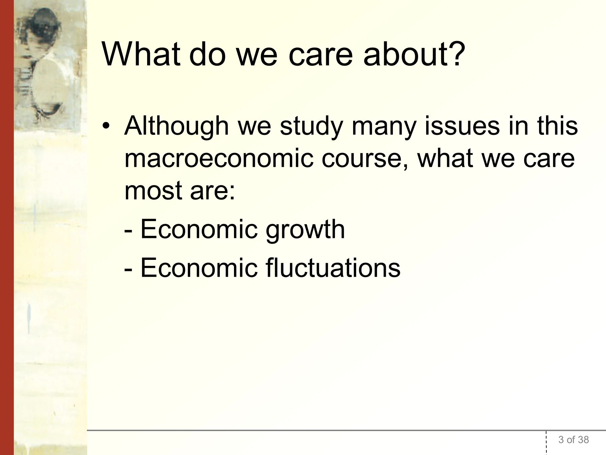
虽然这门宏观经济学课程涉及许多议题，我们最在意的只有两件：
上一页的三项目标里，第三项是概念，前两项才是问题。这一页把它们收敛成两个，而收敛的理由不在话题，在时间尺度。
增长问的是几十年尺度的平均水平为什么上升——同样的资源禀赋，为什么有些国家的人均收入是另一些国家的十倍。波动问的是围绕这条上升线的偏离——某一年为什么比前一年少生产了几个百分点。两者的差别不在于关心哪个变量，而在于关心哪一个频率。
分开问是必要的，因为解释长期水平的力量和解释短期偏离的力量不是同一组。资本积累、人口结构、技术水平决定长期的位置；需求、预期、价格调整的迟滞决定短期的抖动。把两者塞进同一个框架，得到的结论往往两边都不成立。这个区分最后会落在一个很具体的假设上：价格调整得快还是慢。
还有一层。这两个问题都不问某一个人过得好不好，而问加总之后的量。加总不是简单相加：一个人多储蓄对自己是好事，所有人同时多储蓄却可能让总收入下降。这种个体理性、总体相反的情形，是宏观区别于微观最要紧的地方，也是后面每一个模型都要提防的陷阱。
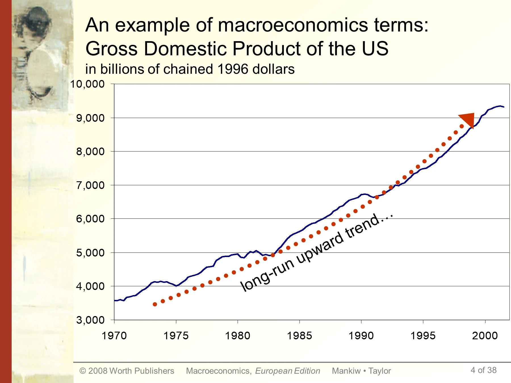
以 1996 年链式美元计的十亿美元
长期向上的趋势……
图中 横轴为年份，纵轴为以 1996 年链式美元计的实际 GDP（十亿美元）；曲线自左上向右下延伸，斜率随时间略有加陡。
这条曲线是此后所有讨论的背景板。纵轴用的是经通胀调整过的实际 GDP，以 1996 年链式美元计价，所以曲线的上升表示实物产出增加，而不是物价上涨带来的名义膨胀。把物价因素剔掉这一步很关键，否则 1970 年代那段陡升会被误读成生产率的跃升。
「链式」指的是基期逐年滚动，而不是固定在某一年。固定基期的算法在相对价格变化剧烈时会失真——某种商品涨价后权重被人为放大，算出的增长偏高。链式加权把这种偏差压到很小，代价是各年数字不能直接相加。
曲线看起来越来越陡，一部分是复利的效果：年增长 3% 意味着每 24 年翻一番，而 1% 要 70 年。长期斜率决定生活水平，这句话可以算一遍：人均产出年均增长 2%，一百年后是原来的 7.2 倍；若只有 1%，一百年后只有 2.7 倍。差距不在某一年的好坏，而在斜率上那零点几个百分点的累积。
增长理论要回答的正是斜率由什么决定：储蓄率、教育、技术水平、产权保护、开放程度。这些变量里哪些能动、哪些动不了，是政策讨论真正的起点。
This graph shows data on U.S. Gross Domestic Product. For now, it suffices for students to know that GDP is a measure of the economy’s total output and total income, and that the data in this chart have been adjusted to take out the effects of inflation. (In Chapter 2, students will learn the exact definition of GDP, how it’s measured, and how it’s corrected for inflation).
There are two main points students should get from this graph.
First, over the long run, there’s a clear upward trend. One of the most important issues in macroeconomics is understanding this long run growth: what determines how fast a country grows over the long run, how do government policies affect the growth rate, and how could we achieve faster growth? This topic is critical, because it’s very tightly linked to our standard of living.
(continued next slide….)
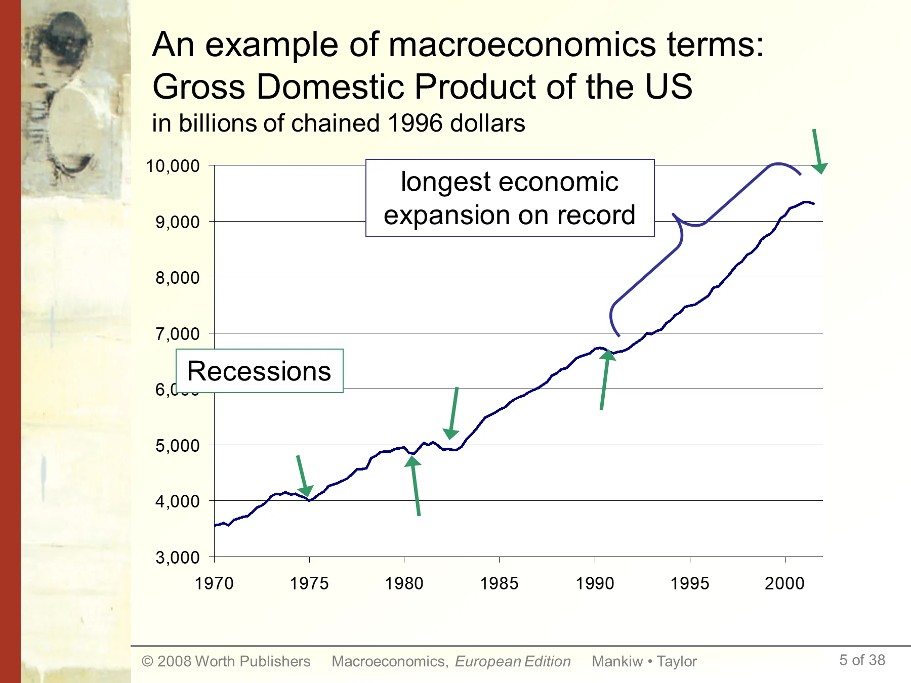
以 1996 年链式美元计的十亿美元
衰退
有记录以来最长的经济扩张
图中 同一条实际 GDP 曲线上标出若干向下的缺口（衰退期），以及 1990 年代至 2001 年那段最长扩张的区间。
同一条线上还有第二个特征：它不平滑。那些向下的缺口是衰退，缺口之后更陡的一段是扩张。
缺口在图上很小，深度衰退也不过让 GDP 掉几个百分点，但换算成人是另一回事。美国劳动力约一亿五千万，失业率上升一个百分点就是一百五十万人失去收入来源。图上一条几毫米的凹陷，对应的是几十万个家庭同时断流。这就是为什么宏观数据的一点点变动值得用整章篇幅去解释。
2001 年 3 月，美国结束有记录以来最长的一轮扩张。这句话本身说明扩张不会自我维持：长度不构成继续的理由，触发转折的往往是利率、资产价格或某个外生冲击的变化，而不是「时间到了」。把扩张的长度当成预测依据，是商业周期预测里最常见的错误。
政策争论的大部分内容，就是围绕这些缺口展开的：缺口能不能被抹平，抹平的代价是什么，以及该在缺口出现之前还是之后动手。事前干预要预测，事后干预要承受已经发生的损失，两条路各有各的难处。
Second, the economy doesn’t always grow smoothly: over the short run, the economy sometimes experiences periods of falling GDP, called recessions. What students see in this graph as little downward blips correspond to periods during which hundreds of thousands of workers lose their jobs.
Periods of rising GDP are called “expansions.” In March 2001, the U.S. completed the longest expansion on record. When the economy is expanding, firms are producing more goods and services, and therefore hiring more workers. Consumer incomes are rising, and consumers are spending more.
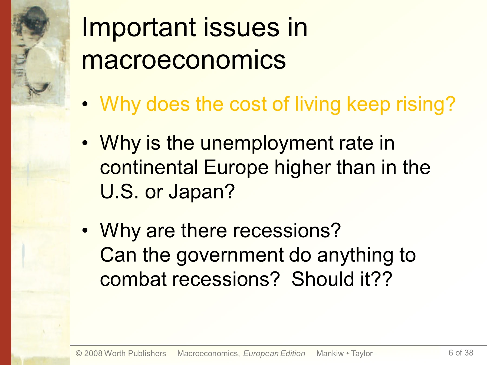
三个问题看起来互不相干，其实对应三种不同的失衡。
生活成本持续上升，问的是货币与物价的关系。这是一个长期现象，答案在货币供给与实际产出的相对速度上，而不在某一年油价的高低。
欧洲大陆失业率高于美日，问的是劳动市场的制度结构：解雇成本、最低工资、失业救济的替代率。这类失业不会因为需求回暖而消失，它和衰退期的周期性失业不是一回事。把两者混为一谈，会得出「等经济复苏就好了」的错误结论，而实际上欧洲的高失业在扩张年份也没有降下来。
衰退以及政府该不该干预，问的是短期：需求为什么突然不足，价格为什么没有迅速调整到出清，财政与货币政策能不能缩短这个过程。「能不能」和「该不该」是两个问题，前者是实证的，后者涉及代价由谁承担——这是本课程最后一编才正面处理的题目。
This slide and the next contain a list of some topical issues that macro can help students understand. Feel free to substitute others as new issues emerge.
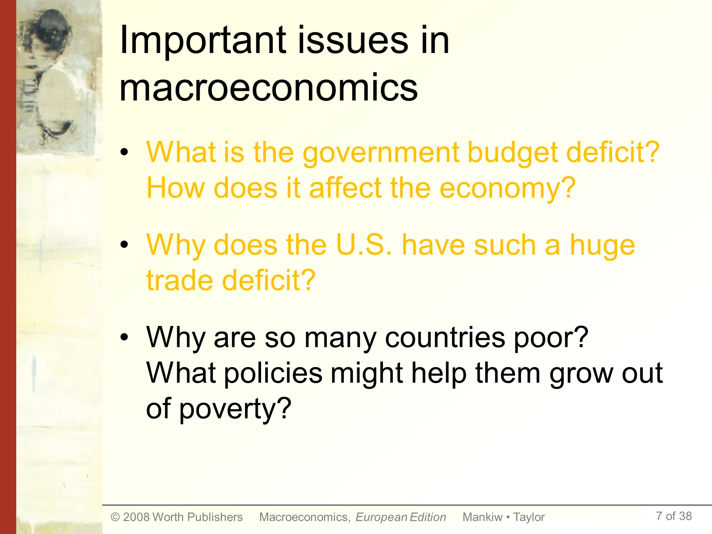
预算赤字与贸易赤字在中文里都叫「赤字」，很容易被当成同一件事，它们的会计含义完全不同。
政府预算赤字是收入减支出的差额，发生在一个国家内部。贸易赤字是进口减出口，发生在国与国之间。两者会通过国民储蓄恒等式联系起来：国内投资超过国内储蓄的部分必须由外资流入弥补，于是财政赤字扩大往往伴随贸易逆差扩大。但这条联系依赖储蓄行为，不是恒等式的机械结论——1990 年代末美国财政出现盈余，贸易逆差却同时在扩大，因为私人储蓄下降得更多。把「双赤字」当成必然规律，就会在数据面前失手。
第三问换了对象。它问的不是某一年的波动，而是几十年的水平差异，答案落在资本积累、教育、制度质量与开放程度上。增长理论处理的是水平与斜率，周期理论处理的是偏离，两类问题的政策含义几乎不重叠。
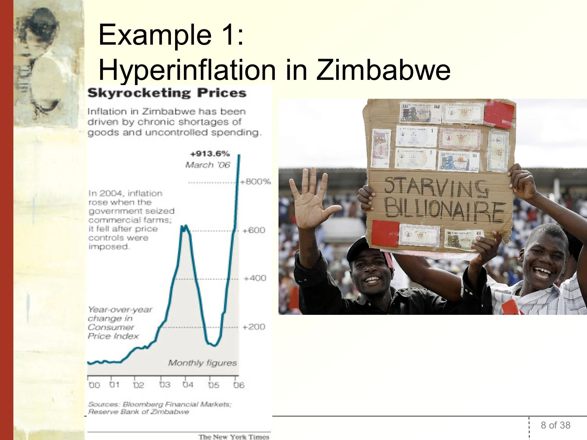
图中 《纽约时报》2006 年 5 月 2 日文章版面，标题为「津巴布韦的通货膨胀有多严重？」，作者 Michael Wines。
津巴布韦不是从货币问题开始的。2000 年前后，政府开始强行征收商业农场，产权保障随之瓦解，外资撤离，制造业停摆。这是一次真实的供给冲击：可生产的东西变少了，能出口换汇的东西也变少了。
接下来的链条是财政的。农场是税收的重要来源，征收之后农业产出崩塌，税基随之萎缩；与此同时政府支出没有缩减。缺口只能靠两条路补：借外债，或者印钞。外债借不到的时候，印钞是唯一还能动用的工具。
印钞一旦成为常态，预期就会转向。工人按预期通胀要求加薪，厂商提前调价，货币的流通速度上升——同样的货币存量追逐更少的商品，价格涨得比货币增长还快。这时候通胀不再是印钞的算术结果，而是印钞加上逃离本币的行为共同推动的。货币需求函数里那个对利率的负号，在这种情形下被推到极端。
恶性通胀的触发往往是真实冲击，持续的原因却在财政。这条判断在后面两个案例里还会以不同的形式出现。
Left: “How bad is inflation in Zimbabwe?”. By Michael Wines, New York Times, published May 2 2006.
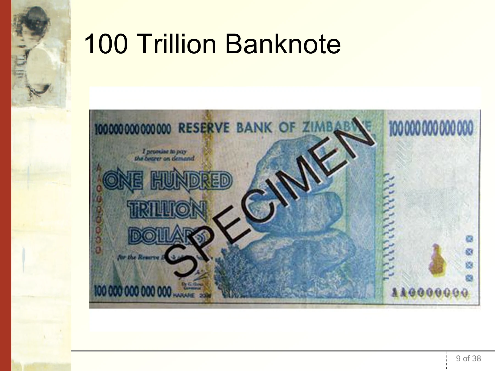
图中 2009 年 1 月发行的 100 万亿津巴布韦元纸币。
一张面值一百万亿的钞票，本身就是一份记录。它说明这个货币单位已经失去了两项功能中的一项半：作为交易媒介还在勉强使用，作为计价单位和价值储藏则基本失效。
面值不是财富。钞票的购买力取决于它能换到多少东西，而发行面值只取决于印多少个零。这张钞票发行时，黑市汇率只值几美元，几周后又跌去大半。发行更大面额不是因为人们变富了，而是因为同样一笔交易需要的纸张越来越多——买一份面包要推一车钞票，点钞的时间成本超过了面包本身。
理论上这对应实际货币余额的下降：人们尽可能少持有本币，工资一到手就换成美元或实物。当持有货币的成本高到一定程度，货币就不再是货币，只剩下纸。面额是通胀的化石记录，读它的方式不是看数字多大，而是看它出现得多快。
Jan 16, 2009: “Zimbabwe to print first $100 trillion note”
From: http://edition.cnn.com/2009/WORLD/africa/01/16/zimbawe.currency/
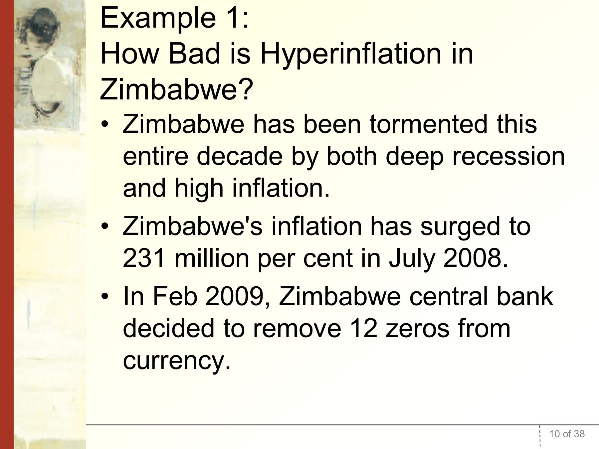
把 231000000% 这个数字换算成日常尺度，才看得出它意味着什么。按年率折成月率：(1 + 2.31×10⁸)^(1/12) − 1 ≈ 398%，也就是物价每个月涨约四倍；按对数算，翻倍时间只有 13 天。
在这种速度下，货币的三项功能依次失效。人们不再用本币记账，合同改用美元或实物；不再持有本币，工资一到手就换成商品；交易媒介也让位给外币。三项功能里最先失去的总是价值储藏，最后失去的是计价单位。
2009 年 2 月去掉十二个零，是把 10¹² 旧元换成 1 新元。这是一次货币重定值，只改变计价单位，不改变任何人的实际财富：工资、债务、存款按同一比例缩小，相对价格不变。删零不能治通胀，它只是让账本好算一点。真正的止跌要等到印钞停止。
算术上还有一层：如果删零之后赤字依旧靠印钞弥补，新的零会以同样的速度长回来。津巴布韦在 2006 年和 2008 年已经删过两轮零，2009 年这一轮是第三次，此后本币被直接停用——这恰好说明重定值本身不是政策，只是政策失败时的技术处理。
Inflation rate in Nov 2008 reached 79,600,000,000%. Source: https://en.wikipedia.org/wiki/Hyperinflation_in_Zimbabwe
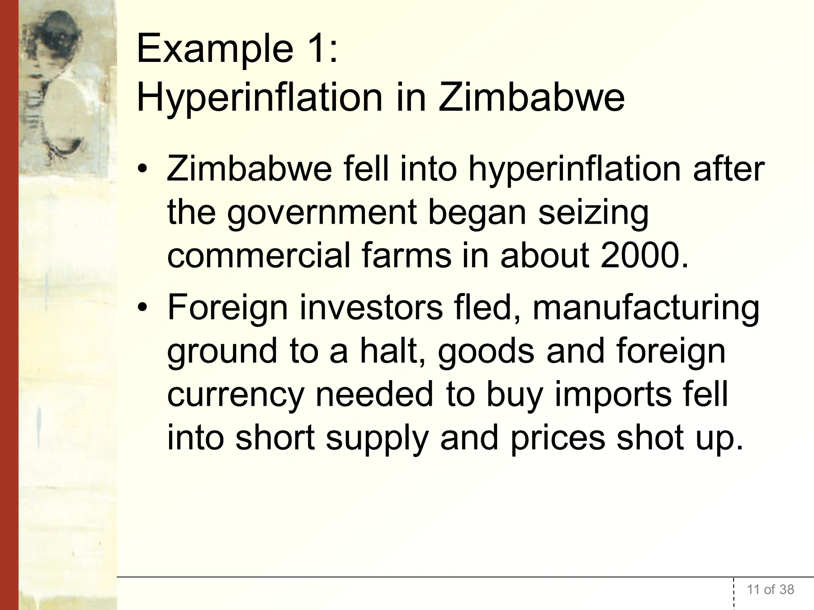
上一页的因果链可以拆成两段，一段是真实的，一段是货币的。
真实的一段：土地被征收之后，农场的经营权和收益权都不再稳定，外资撤离，机械、化肥、种子的进口因外汇短缺而中断，农业产出塌陷。农业占出口的大头，出口塌陷又让外汇更短缺，形成循环。这是标准的供给冲击——总供给左移，价格上升与产出下降同时发生，也就是 1970 年代那种「滞胀」的结构。
货币的一段：产出下降意味着税基缩小，而政府的支出刚性没有同步下降。税收不够，借债无门，只剩印钞。印钞把供给冲击造成的一次性价格上涨，变成了持续上涨。
两段的分工决定了药方。只稳定货币而不恢复生产，价格会稳住但产出仍在低位；只恢复生产而不停止印钞，赤字仍会把价格推上去。财政赤字是根源，货币扩张是传导——这是研究恶性通胀的文献大体同意的结构。
常见误读是把顺序倒过来，认为印钞是起因。真实冲击在前，货币扩张在后，印钞让事情不可收拾，但它不是最初的触发。
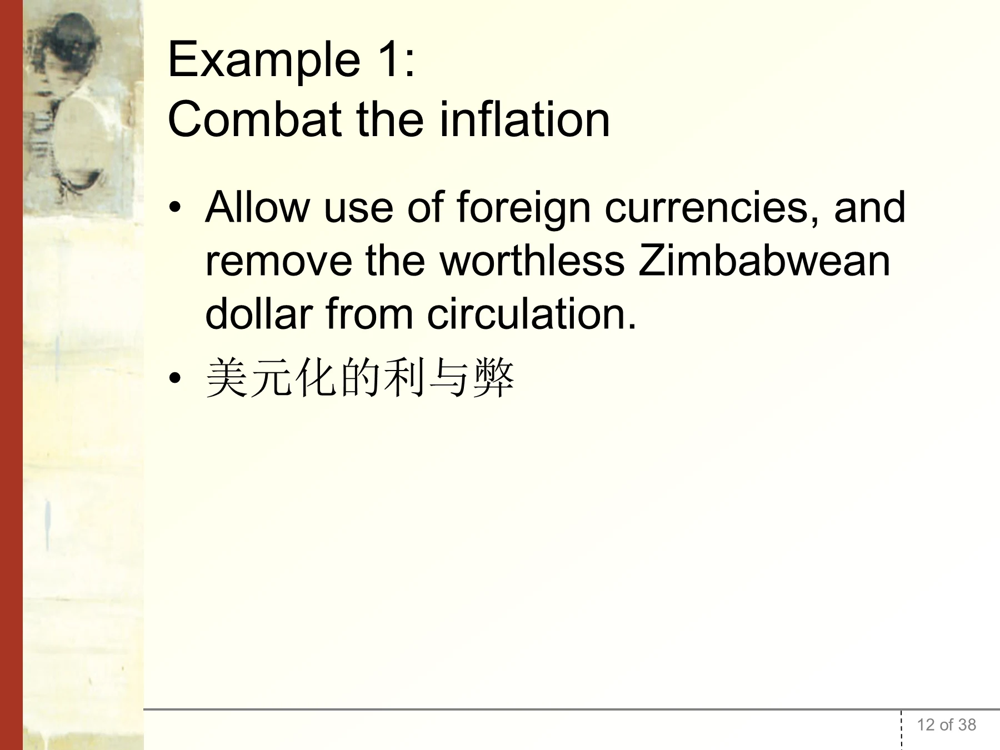
美元化的利与弊
止住通胀的办法在技术上很简单：停止用印钞弥补赤字。难的是在一个已经不信任本币的经济里做到这一点，因为「不再印钞」这句话本身没有可信度。
允许外币流通、把本币逐出市场，等于把货币发行权交给别人。好处是立刻获得可信度——美联储不会为了津巴布韦的财政赤字印钞，通胀预期一夜之间锚定。坏处也同样明确：铸币税归了外国，本国政府失去一笔收入；出现银行危机时，中央银行没有能力充当最后贷款人；汇率与利率跟着别人的周期走，本国失业率上升时无法用货币政策对冲。
2009 年 4 月，津巴布韦元被无限期停用，市场改用美元、南非兰特和英镑。此后通胀确实降到个位数，代价就是上述三项自主权。
这里有一个一般性的取舍：货币可信度与货币政策独立性，在制度薄弱的国家往往不能兼得。欧元区成员国放弃本币是为了前者，代价是后者——2010 年之后的希腊正好撞在这条取舍的另一面，1-27 会看到它的极端形态。
By April 2009, the Zimbabwe dollar was suspended indefinitely; the government now uses the South African Rand, the United States Dollar, and the British Pound.
不过，具有讽刺意味的是，虽然津巴布韦元在本国不大受欢迎，但是在收藏界，票面万亿的津巴布韦元却成为了收藏者最热门的收藏品。
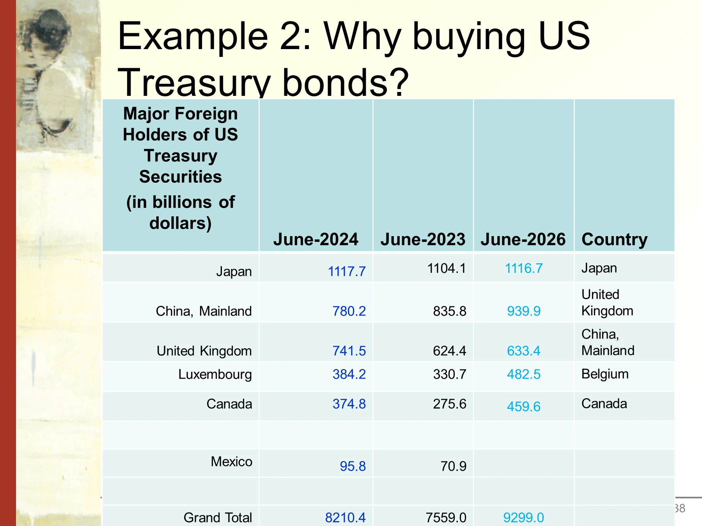
美国国债的主要外国持有者（单位：十亿美元）
| 国家 / 地区 | 2024 年 6 月 | 2023 年 6 月 | 2026 年 6 月 | 国家 / 地区 |
|---|---|---|---|---|
| 日本 | 1117.7 | 1104.1 | 1116.7 | 日本 |
| 中国大陆 | 780.2 | 835.8 | 939.9 | 英国 |
| 英国 | 741.5 | 624.4 | 633.4 | 中国大陆 |
| 卢森堡 | 384.2 | 330.7 | 482.5 | 比利时 |
| 加拿大 | 374.8 | 275.6 | 459.6 | 加拿大 |
| 墨西哥 | 95.8 | 70.9 | — | — |
| 合计 | 8210.4 | 7559.0 | 9299.0 | — |
表中 原页左右两张表并排：左半为 2024 年 6 月与 2023 年 6 月的持有额，右半（2026 年 6 月列与最右国名列）是按规模另排的一张表，两边的行并不对应同一国家。
这张表有三层信息，读法各不相同。
规模上，外国持有者合计约 8.2 万亿美元，日本 1.12 万亿居首，中国大陆 7802 亿，英国 7415 亿。这几个数字放在一起说明，美债市场不是一个国家的市场，而是一个全球的抵押品市场——持有者分散在几十个国家，任何单一持有者的退出都不足以让市场停摆，但它足以改变价格。
位次上，中国大陆从 2023 年 6 月的 8358 亿降到 2024 年 6 月的 7802 亿，同期英国从 6244 亿升到 7415 亿，两者互换名次。这个变化有一部分是统计口径造成的：通过伦敦金融中心托管的头寸记在英国名下，最终持有人可能在别处。用这类月度数据推断「谁在抛售」，必须先把托管地和最终持有人分开。
方向上，总量从 7.56 万亿升到 8.21 万亿，一年增加约 6500 亿。个别国家减持的同时，外国部门整体仍在增持——这两句话并不矛盾，但经常被放在一起当成矛盾的证据。
Source: https://ticdata.treasury.gov/resource-center/data-chart-center/tic/Documents/slt_table5.html
2025年12月，墨西哥国会迅速批准了一项针对中国的高额关税法案，将1463种中国进口商品的税率上调至5%至50%。
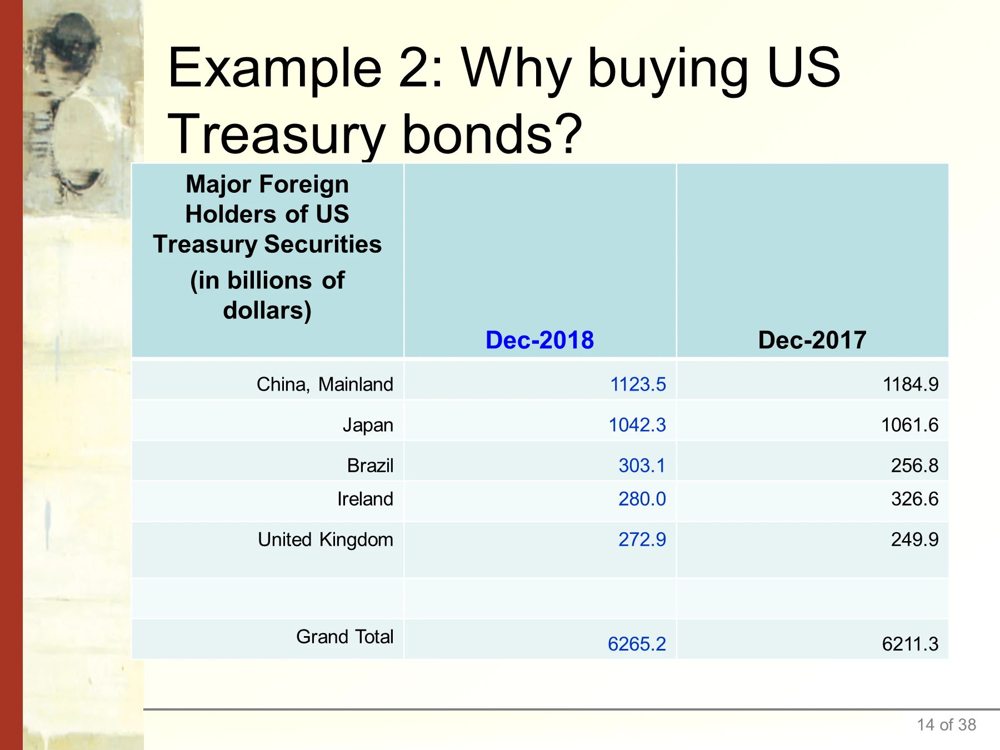
美国国债的主要外国持有者（单位：十亿美元）
| 国家 / 地区 | 2018 年 12 月 | 2017 年 12 月 |
|---|---|---|
| 中国大陆 | 1123.5 | 1184.9 |
| 日本 | 1042.3 | 1061.6 |
| 巴西 | 303.1 | 256.8 |
| 爱尔兰 | 280.0 | 326.6 |
| 英国 | 272.9 | 249.9 |
| 合计 | 6265.2 | 6211.3 |
把时点挪到 2018 年，位次是另一番样子：中国大陆 1.12 万亿居首，日本 1.04 万亿次之，巴西、爱尔兰、英国在 2500 亿到 3000 亿之间。
两个时点对照着看：中国大陆从 2017 年 12 月的 1.18 万亿降到 2018 年 12 月的 1.12 万亿，减少 614 亿；同期总量从 6.21 万亿升到 6.27 万亿。中国在减持，外国部门整体在增持，中国的份额在下降。
份额下降本身不等于「抛售」。储备管理者调整组合时，到期不续、汇率折算、估值变动都会体现在这类月度数据里，单看两个时点分不清哪一种是主因。存量数据的变化率，不等于交易量。
Source: http://ticdata.treasury.gov/Publish/mfh.txt
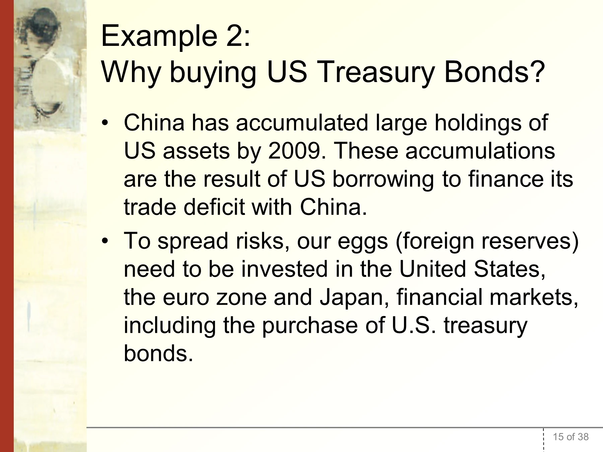
中国为什么持有这么多美债？页面上给了两条理由，一条是会计的，一条是组合的。
会计的那条是循环：中国对美贸易顺差，出口企业把美元卖给商业银行，商业银行卖给中央银行，外汇储备随之增加。这笔美元不能以现金形式趴在账上，必须找一种能容纳万亿规模、流动性又足够好的资产。美国国债市场是少数同时满足这两个条件的地方。所以持有美债不是一次主动的选择，而是顺差的会计结果——钱进来了，总得放在某处。
组合的那条是分散：储备不能全押在一种货币上，于是分成美元、欧元、日元几块，美债只是其中一块。这一条解释了储备里为什么同时有其他资产，但解释不了美债占比为什么这么高——答案还是回到第一条，容量和流动性。
两条合起来，把一个政治问题还原成资产负债表问题：贸易顺差国在被动地为逆差国融资。这就是所谓全球失衡的金融一侧：经常项目的顺差，必然对应资本项目的流出，而流出的形式由对方市场的深度决定，不由输出国的偏好决定。
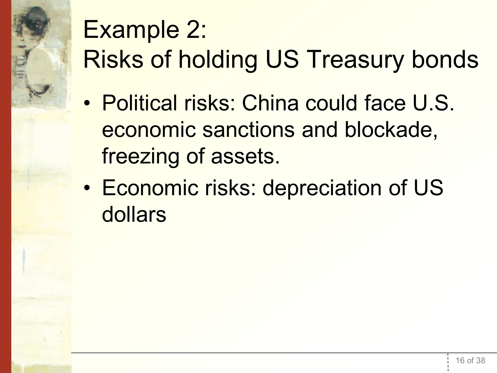
持有别人的债，风险分两类，这两类的性质完全不同。
政治风险不可定价：制裁、资产冻结、支付通道被切断。这类风险没有概率分布，也没有对冲工具，只能靠持有量来控制——持有得越多，暴露越大。俄罗斯 2022 年的经历说明这不是假设性的情形，被冻结的储备在一天之内从资产变成谈判筹码。
经济风险可以定价：美元贬值。这里有一层不对称值得说清。中国持有的资产以美元计价，对应的负债（为对冲储备而投放的本币）以人民币计价。美元贬值时，这笔资产折成本币就缩水，缩水的部分正好等于美国实际债务的减轻——债权人的损失就是债务人的收益，这是一次跨国界的实际转移，不是账面数字的游戏。
两种风险的方向不同：政治风险随持有量上升，经济风险随汇率波动上升。前者能靠减持化解，后者只能靠币种分散，而币种分散又受制于其他市场的容量。这就是储备管理的实际约束。
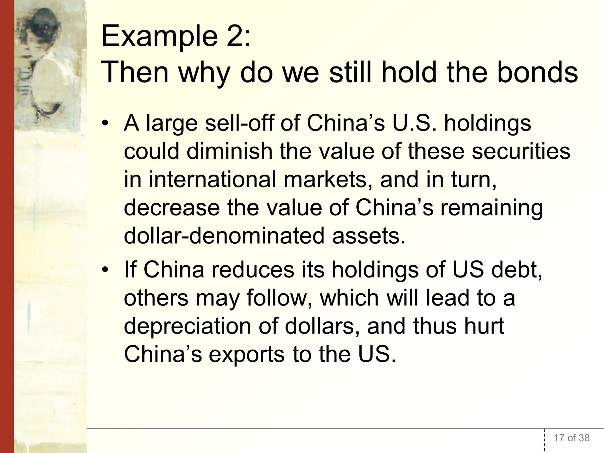
上一页说减持可以降低政治风险，这一页说减持本身有代价，两者构成一个真实的困境。
第一个代价是价格。中国的持仓规模大到足以影响价格：一次性抛售会让二级市场价格下跌、收益率上升，剩下的持仓按市价重估后同样缩水。卖得越急，卖出的和没卖出的都亏。大持有者面对的是向下倾斜的需求曲线，这是它和原子式投资者的根本区别。小投资者可以假设自己的卖出不影响价格，大持有者不能。
第二个代价是信号。中国减持会被解读为对美元资产的信心投票，其他国家跟随，美元贬值。而美元贬值又打击中国对美出口——人民币相对美元升值，出口商品变贵。这条渠道把金融操作和实体出口绑在一起，使「卖债」这个动作同时具有金融和贸易两种后果。
第三个代价是自我实现：市场一旦预期中国要减持，就会提前抛售，价格先跌，中国还没动手就已经受损。预期在这里不是对事实的反映，而是事实的制造者。
三个代价指向同一个结论：威胁的可信度取决于自己是否承受得起执行的成本。这也是为什么这类持仓在实践中的调整总是缓慢的、以到期不续为主，而不是断崖式的。
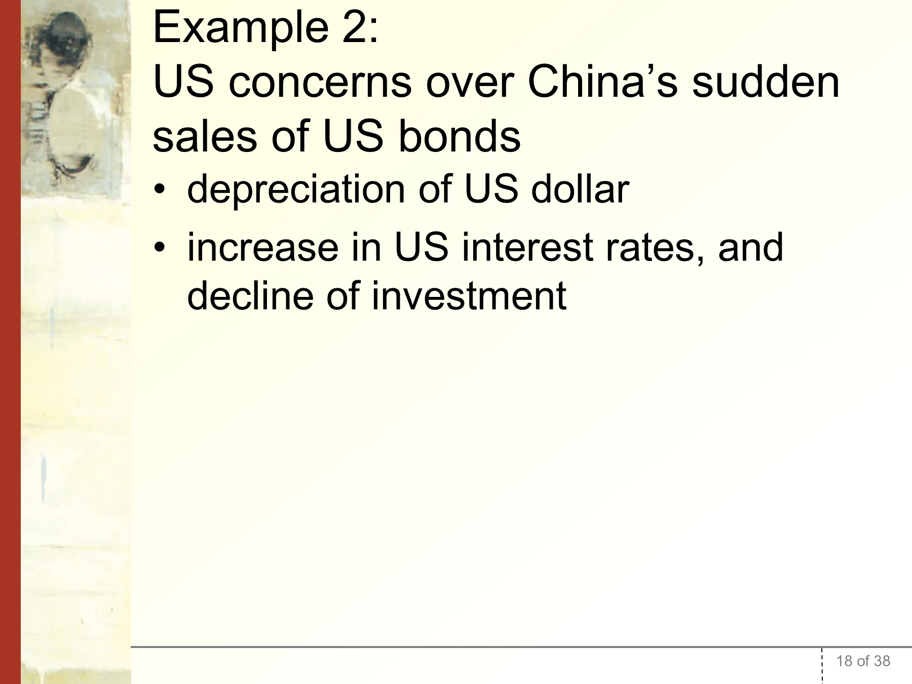
同一件事从美国一侧看，代价落在三个变量上，而这三个变量是串起来的。
美元贬值：外资撤离需要先把美元换成其他货币，美元供给增加，汇率下行。进口价格随之上升，通胀压力回来。
利率上升：外国买家退出，财政部要找到新的买家，只能提高收益率。收益率上升传导到房贷、企业债、州政府债，整个经济的资金成本抬高。
投资下降：利率上升压低投资，再通过乘数压低收入，收入下降又压低税收，赤字反而扩大，财政部的融资需求更大。这条反馈是这页最容易被忽略的部分——抛售本意是打击债权人，结果可能先打击债务人自己的财政。
备注里提到的美联储困境值得展开：面对收益率飙升，美联储可以压低短端利率来缓冲，但长端利率由期限溢价决定，短端操作只能间接影响；而放松货币又会加剧美元贬值与通胀。一个工具，两个目标，只能二选一。这是开放经济下政策独立性的边界，也是后面讲汇率制度时会反复用到的逻辑。
The Federal Reserve could mitigate the interest rate spike by reducing short-term interest rates, although this reduction would influence long-term rates only indirectly, and could worsen the dollar depreciation and increase inflation.
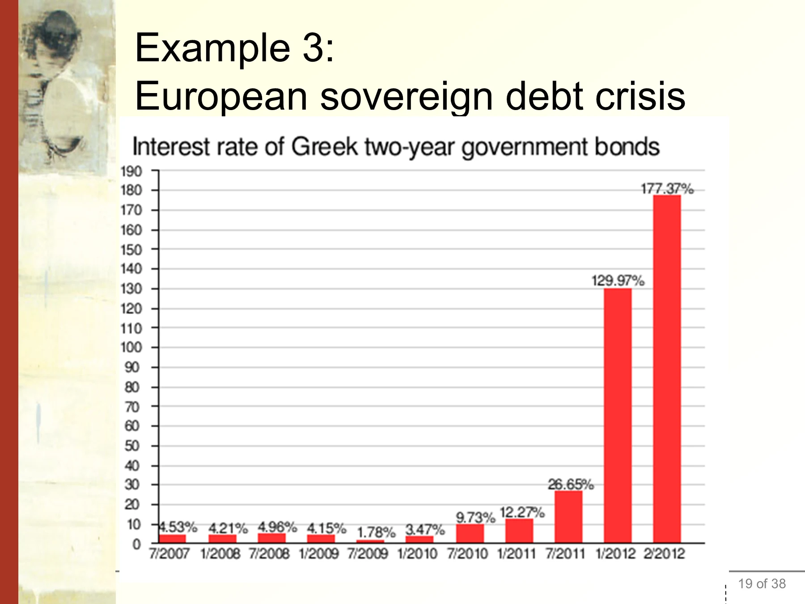
图中 原页为维基百科「欧洲主权债务危机」条目的配图，示意危机波及的国家与债务规模。
希腊的问题不是一天爆出来的。2009 年 10 月新政府上台，承认此前上报的赤字数据被低估，当年赤字占 GDP 超过 12%，而《稳定与增长公约》的上限是 3%。数据一改，市场就得重新给希腊国债定价。
定价的方式是利率。2010 年 4 月标普把希腊主权评级降到垃圾级，两年期国债收益率随即升到 15.3%。这个数字的含义要算一下：希腊当时的名义增长率是负的，15% 的融资成本意味着债务/GDP 比值会自动上升——不是因为没有紧缩，而是因为利息跑得比增长快。这就是所谓的雪球效应。
于是出现一个悖论：市场要求希腊证明自己还得起债，而证明的方式（紧缩）压低了增长，反而让它更还不起。这个悖论贯穿了此后八年的谈判，也是 1-26 那页「财政紧缩之悖论」的来源。
欧元区的特殊之处在于，成员国的债务以自己无法发行的货币计价。没有本币的中央银行在背后托底，主权债的定价就只剩下违约概率一项，利差可以在几周内从 200 个基点走到 1500 个基点。
Source: http://en.wikipedia.org/wiki/European_sovereign_debt_crisis
On 27 April 2010, the Greek debt rating was decreased to the upper levels of 'junk' status by Standard & Poor's amidst hints of default by the Greek government.[41] Yields on Greek government two-year bonds rose to 15.3% following the downgrading.
希腊曾在2003年至2007年经济快速增长，平均年增长率达到4%。高增长主要来自于财政和经常项目的双赤字以及加入欧元区后更容易获得廉价的贷款带来的基础设施建设的拉动以及信贷消费。
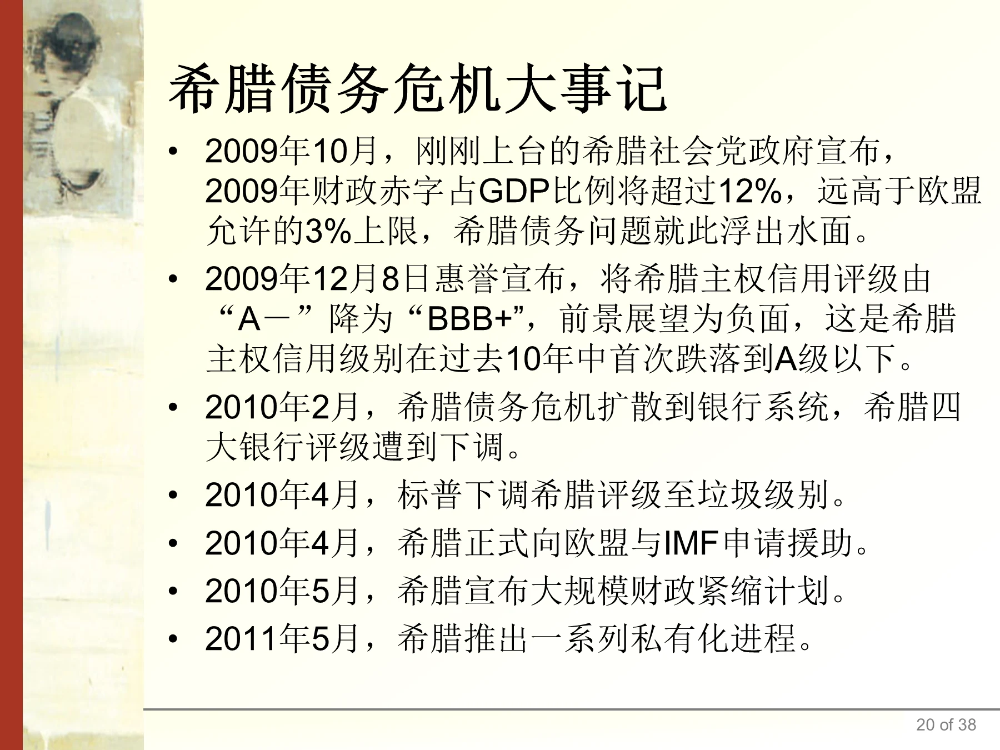
这份大事记的读法是看节奏：从数据曝光到申请援助，只用了六个月。
2009 年 10 月赤字曝光，12 月惠誉降级，2010 年 2 月危机扩散到银行系统，4 月标普降到垃圾级、希腊正式申请援助，5 月宣布紧缩。每一步都比上一步快，因为每一步都在改变下一步的融资成本——评级下调推高利率，利率推高赤字，赤字又坐实下调的理由。
银行系统那一步是关键。希腊国债大量被本国银行持有，用作向欧洲央行融资的抵押品；国债评级下调，抵押品打折，银行需要补充资本，于是银行也成了问题的一部分。主权风险与银行风险互相担保，这个循环此后在爱尔兰、西班牙、意大利重复出现，是欧元区危机最难解的结构。
债务的两个数字要分开看：赤字 12.7% 是流量，公共债务 113% 是存量。113% 本身不算高——同年日本超过 200%——真正的问题是 12.7% 的赤字意味着债务还在以每年十几个百分点的速度往上走。存量不可怕，流量失控才可怕。
2009年10月初，希腊政府突然宣布，2009年政府财政赤字和公共债务占国内生产总值的比例预计将分别达到12.7%和113%，远超欧盟《稳定与增长公约》规定的3%和60%的上限
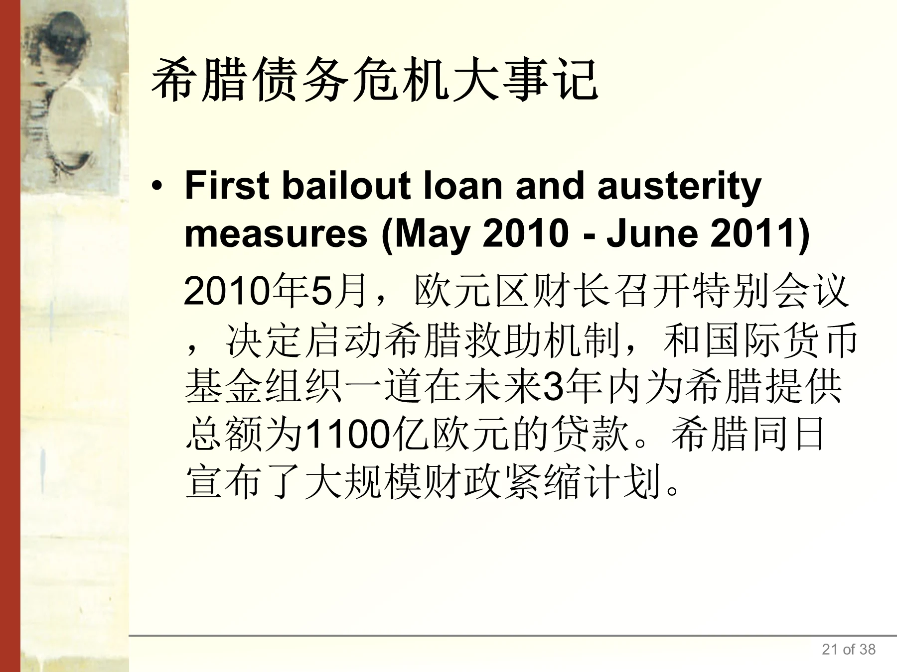
第一轮救助贷款与紧缩措施（2010 年 5 月 – 2011 年 6 月）
1100 亿欧元摊到三年，每年约 370 亿。这个规模不是随意定的：它刚好覆盖希腊未来三年的到期债务与赤字，多一分则政治上过不去，少一分则几个月后又要重谈。
为什么是贷款而不是转移支付？因为欧元区没有财政联盟，成员国纳税人不会同意直接为另一个国家的赤字买单。贷款至少保留了「要还」的形式，也让债权方有资格附加条件——削减养老金、提高退休年龄、上调增值税。条件写进本国法律，才算是可信的承诺。
这笔钱解决的是流动性，不是清偿能力。如果希腊的债务在紧缩之后仍然不可持续，贷款只是把违约的时点往后推三年，并把私人债权人换成官方债权人。用借新还旧的方式处理债务，只改变债权人名单，不改变债务总量。这一点要到 2012 年第二轮救助时才被正面处理。
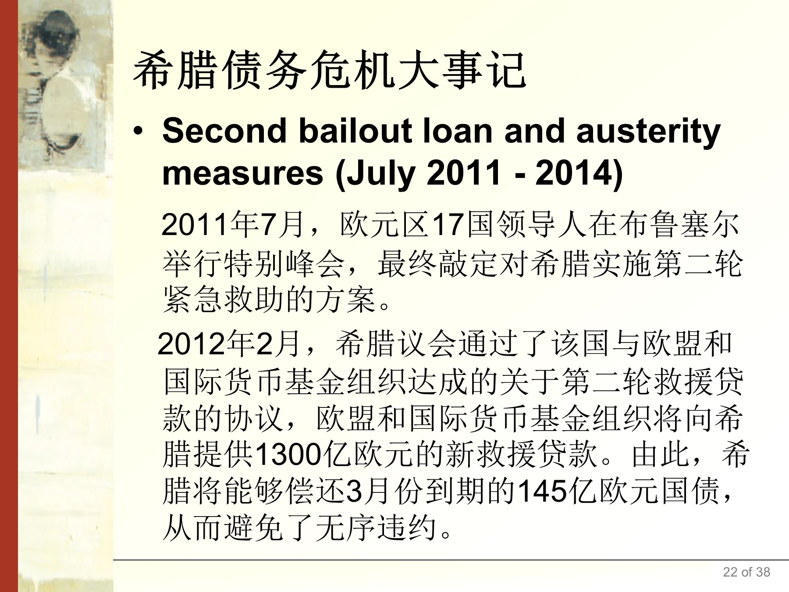
第二轮救助贷款与紧缩措施（2011 年 7 月 – 2014 年）
第二轮的核心不是 1300 亿新贷款，而是私人部门的减记。
2012 年 2 月的协议里，私人债权人接受了对希腊国债的实质减记，名义本金削减约 53%，按净现值算超过 60%。这是欧元区第一次让私人债权人承担损失，而 2010 年的原则还是「私人部门自愿参与、不承担损失」。
为什么必须减记？因为 1300 亿里有 145 亿是用来偿还 3 月到期国债的。如果只是借钱还旧债，债务总量不变，只是债权人从私人换成了官方。要压低债务/GDP，只有两条路：增长，或者减记。2011 年希腊 GDP 仍在萎缩，增长那条路走不通。
减记把损失从纳税人转移给了投资者，代价是确立了一个先例：此后市场对欧元区主权债的定价里多了一项减记风险，这直接推高了西班牙、意大利的融资成本。规则的每一次例外，都会变成下一次定价的基准。
2012年6月的希腊议会选举，支持紧缩与留在欧元区的新民主党与泛希腊社会主义行动获得了超过半数的议会席位。
第三轮的规模和前两轮不同：155 亿的草案、860 亿的最终协议，中间隔着一次违约。
2015 年 6 月 30 日，希腊没有偿还 IMF 约 17 亿美元的贷款，成为 IMF 历史上第一个违约的发达经济体。这一步的意义不在金额，在信号：IMF 的贷款通常被视为优先债权，连它都违约，说明政府的现金流已经断了。
860 亿里很大一部分不是新钱，而是把到期债务展期、把银行资本重组的成本打包进来。条件比前两轮更硬：养老金改革、增值税上调、私有化，包括把 14 个地方机场的经营权交给法兰克福机场集团。救助的条件从财政指标深入到产权，这是第三轮与前面最大的区别。
2018 年 6 月，欧元集团认可希腊完成改革，发放最后一笔 150 亿，并把还贷期限延长十年。延长期限等于降低每年的偿付压力，是一种不叫减记的减记。救助计划终止不等于债务消失——希腊的债务/GDP 到那时仍在 180% 左右，只是融资成本从市场的 15% 换成了官方的 1%。
但三驾马车要求希腊削减养老金支出，提高退休年龄，上调增值税税率，以便在2016年实现相当于其国内生产总值1%的增收。
2015年6月30日，IMF宣布希腊未能于当天偿还约17亿美元的IMF贷款。希腊成为IMF历史上第一个债务违约的发达经济体。
希腊总理齐普拉斯先前一直反对国际债权方所提的私有化等方案，致使希腊第三轮救助协议迟迟不能达成。最终，双方在财政目标、私有化以及能源市场自由化等问题上各作让步，协议于8月１１日达成。
希腊总理齐普拉斯8月２０日晚宣布辞职，并要求提前举行大选。
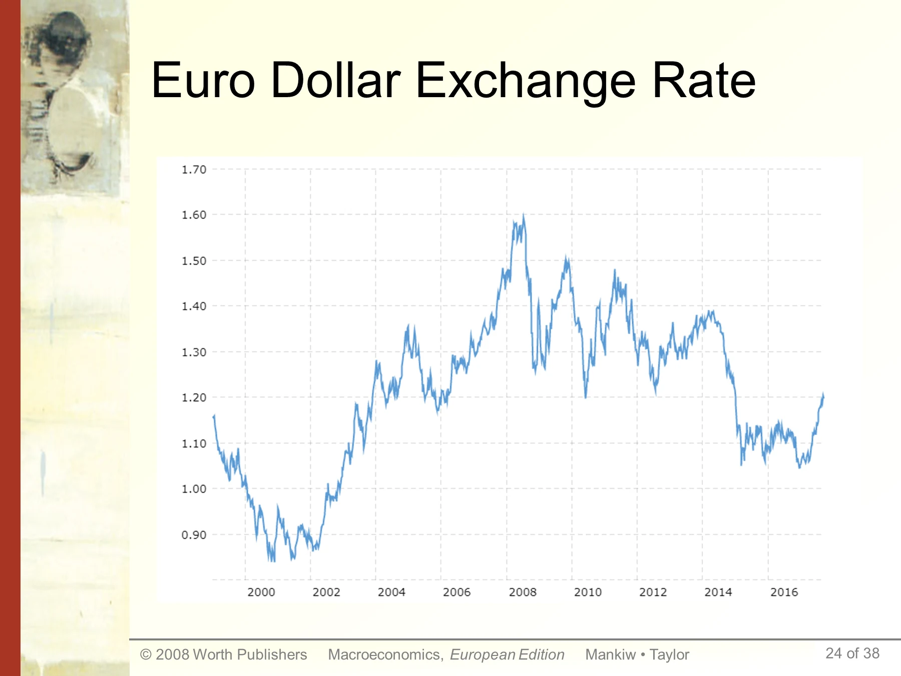
图中 横轴为 1999 年以来的时间，纵轴为 1 欧元可兑换的美元数。曲线在 2000 年底触及 0.82 附近的低点，随后长期上行，2008 年达到 1.6 附近的高点，此后回落并在 1.05–1.15 区间波动。
这张汇率图提供了一条容易被忽略的线索：欧元在 2000 年至 2008 年间对美元持续升值，从 0.82 一路走到 1.6 附近。
对希腊这样的南欧国家，这是一次持续的竞争力冲击。本币升值意味着出口品在国外变贵、进口品在国内变便宜，贸易收支恶化。而由于使用同一种货币，希腊无法通过贬值来抵消——调整只能靠国内价格与工资的下降完成，这条路慢且痛苦。
反过来，2010 年之后欧元贬值，本该帮助希腊恢复竞争力，但此时希腊的名义工资已经被紧缩压低，出口的价格优势又被融资成本的上升抵消掉了。
同一个汇率，对德国是顺风，对希腊是逆风。问题不在汇率水平，而在成员国处在产业结构的什么位置：德国出口的是价格弹性低的资本品，汇率变动几个百分点不影响订单；希腊出口的是价格弹性高的旅游和农产品，汇率一变，客源就转向土耳其和北非。
Source: http://www.macrotrends.net/2548/euro-dollar-exchange-rate-historical-chart
次贷危机前的很长一段时间欧元一直是处于一个上升通道，出口受到一定程度的打击.
2011年7 月末，标普已经将希腊主权评级09 年底的A-下调到了CC级（垃圾级）.
这一页列了七条，它们是层层叠加的，不是并列的清单。真正起作用的是它们之间的连接。
最底下一条是货币联盟而非财政联盟。加入欧元区之后，希腊的利率向德国靠拢，名义利率从两位数降到 4% 左右。问题出在通胀：希腊的通胀高于德国，名义利率相同意味着实际利率更低，甚至为负。廉价资金涌入，推动消费与房地产，工资随物价上涨。同一段时期，德国的实际利率偏高、工资增长受压制，于是两国的单位劳动成本逐年拉开——竞争力这一条就是这么积累出来的。
工资涨得比生产率快，出口就变贵。由于不能贬值，这个缺口只能靠持续借外债填补，经常项目赤字扩大，外债累积。到这里，前面的三条已经合成一个闭环：低实际利率制造了借贷，借贷掩盖了竞争力流失，竞争力流失又需要更多借贷。
高福利与老龄化让这个闭环更难退出。社会福利支出占 GDP 的 20.6%，占政府总支出的 41.6%。这部分支出对人口结构敏感，老龄化使它逐年加重，而税收体系无法同步扩张。削减它政治上极难，因为受益者是选民，付款人是未来的纳税人。
劳动力市场刚性则决定了调整的速度。解雇成本高、行业准入限制多，资源无法从萎缩部门流向扩张部门。在汇率工具缺失的情况下，内部贬值（降工资、降价格）本来是唯一的调整渠道，而刚性让这条渠道也变窄了。
国际金融危机提供的是时点：2008 年之后全球风险偏好逆转，廉价资金断流，前面所有的缺口在同一年暴露。
结构性的因素决定这个国家有多脆弱，触发性的因素只决定它在哪一年倒下。
The Greek economy was one of the fastest growing in the Eurozone from 2000 to 2007; during that period, it grew at an annual rate of 4.2% as foreign capital flooded the country.
2010年希腊社会福利支出占GDP的比重为20.6%，而社会福利在政府总支出中的占比更是高达41.6%。
四组争论其实是同一个问题的四个侧面：调整的成本由谁承担。
德国的态度可以用一句话概括：不救那些不改革的。德国纳税人不愿意为本国退休年龄之后、别国退休年龄之前的福利买单，因此任何救助都必须附带条件，而且条件要写进对方的法律。这个立场在 2010 年到 2015 年间几次把谈判推到破裂边缘，也解释了为什么救助总是「刚好够撑到下一年」。
流动性支持解决的是另一个问题。OMT 承诺在二级市场无限量购买成员国国债，条件是对方先接受救助计划。它的作用不在于真的买了多少——实际上几乎没买——而在于把「欧元区不会解体」变成一个有资金支持的承诺。德拉吉 2012 年 7 月说「不惜一切代价捍卫欧元」，市场信了，西班牙和意大利的收益率随即回落。央行的话之所以有用，是因为它背后有印钞权；没有印钞权的话，同样的承诺一文不值。
财政紧缩之悖论是这里最实质的经济学问题。紧缩的直接效果是压缩总需求；如果财政乘数大于 1，产出下降的幅度超过支出削减的幅度，债务/GDP 反而上升。希腊 2010 年到 2013 年的经历与此吻合：削减了相当于 GDP 十几个百分点的支出，债务/GDP 从 113% 升到 175%。这不是说紧缩永远错，而是说在利率已经接近零、货币政策无法对冲时，乘数会变大，紧缩的自我否定性也最强。
救急与救穷的区别在时间尺度。救急是补流动性缺口，几个月见效；救穷是改变增长能力，需要十年。把两者混在一起，就会出现「钱花了、问题还在」的结果——前两轮救助大体属于救急，而竞争力的缺口至今没有补上。
2011年10月27日，欧元区领导人与私人银行和保险公司达成一项协议，使其接受对希腊政府债券的50%损失，以降低希腊的债务负担。
欧洲央行(ECB)2012年9月6日公布了"直接货币交易"(OMT)的计划，针对欧元区二级国债市场进行无限量冲销式的国债购买，购买对象主要为到期期限在3年以下的国债。
SMP计划，即证券市场计划(Securities Markets Program，简称SMP)，是指欧洲央行将通过二级市场上购买成员国国债，从而达到干预债市、推升其国债需求并降低收益率的目的。
OMTs和SMP最大的不同就是在于规模限制上。对于此前的SMP，欧洲央行从来没有承诺无限制购买，而且，在事实上，即便市场动荡，欧洲央行也没有购买太多债券。
此外，SMP计划所购债券具有优先偿债权，因此不能令市场安心。
爱尔兰与希腊的对比
2007年德国最大的贸易顺差来源国分别是法国（289亿欧元）、美国（277亿欧元）、英国（276亿欧元）和西班牙（270 亿欧元），其中欧盟成员国就占了3席，德与法、英、西三国外贸顺差占同期外贸顺差的42.5%，在德外贸顺差中占有主要地位。
退出欧元区的清单看起来像一份收益表：本币贬值、出口改善、摆脱紧缩。这份收益表漏掉了资产负债表。
希腊的债务以欧元计价，资产（房产、存款、未来税收）以本币计价。一旦退出，新货币立刻贬值，比如 50%，那么以欧元计的债务折成本币就翻了一倍。企业、银行、政府的资产负债表同时恶化，违约从可能变成必然。这就是货币错配：收入是弱币，负债是强币。贬值改善的是贸易条件，摧毁的是偿付能力，两者在时间上不同步——前者要一两年，后者只需一个周末。
挤兑的机制更直接。退出消息一公布，存款人会把钱转到德国或塞浦路斯的账户，银行体系在几天内失去存款，只能冻结提款。2015 年希腊实施资本管制，正是这个剧本的预演：那一次没有退出，只是公投，资本就已经开始外逃。
通胀是贬值的另一面。进口商品立刻变贵，而希腊的能源、药品、机械大量依赖进口，通胀会在几个月内吃掉工资的购买力，实际工资的下降幅度可能超过名义贬值的收益。
失业与衰退来自需求侧的连锁：银行无法放贷，企业无法进口，投资停摆。赖账则是终点——政府对官方债权人违约，此后很多年无法在国际市场融资。
退出不是没有代价的解脱，而是一次以本币计价的债务重组加上一次深度衰退。这解释了为什么 2015 年公投否决救助条件之后，希腊政府仍然留在欧元区：退出的成本由当下的储户和债务人承担，收益要等很多年才出现，而政府只对当下的选民负责。
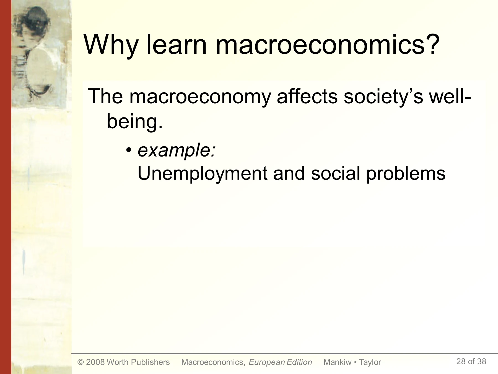
宏观经济影响社会的福祉。
前面二十几页回答的是「宏观经济学研究什么」，从这一页开始回答「为什么值得学」。
第一个理由是外部性：宏观的好坏不只影响当事人。失业率上升时，受影响的不只是失业者——社区犯罪率、公共卫生、家庭稳定都会变化。这些成本不进入任何人的私人账本，所以市场不会自动把它内部化，这构成了公共政策介入的理由。
这个理由在经济学里分量很重。它意味着「失业是劳动力市场的自愿结果」这种说法即便在个体层面成立，在总体层面也不足以否定政策干预——因为决策者要考虑的是全部成本，而不只是工资损失那一项。
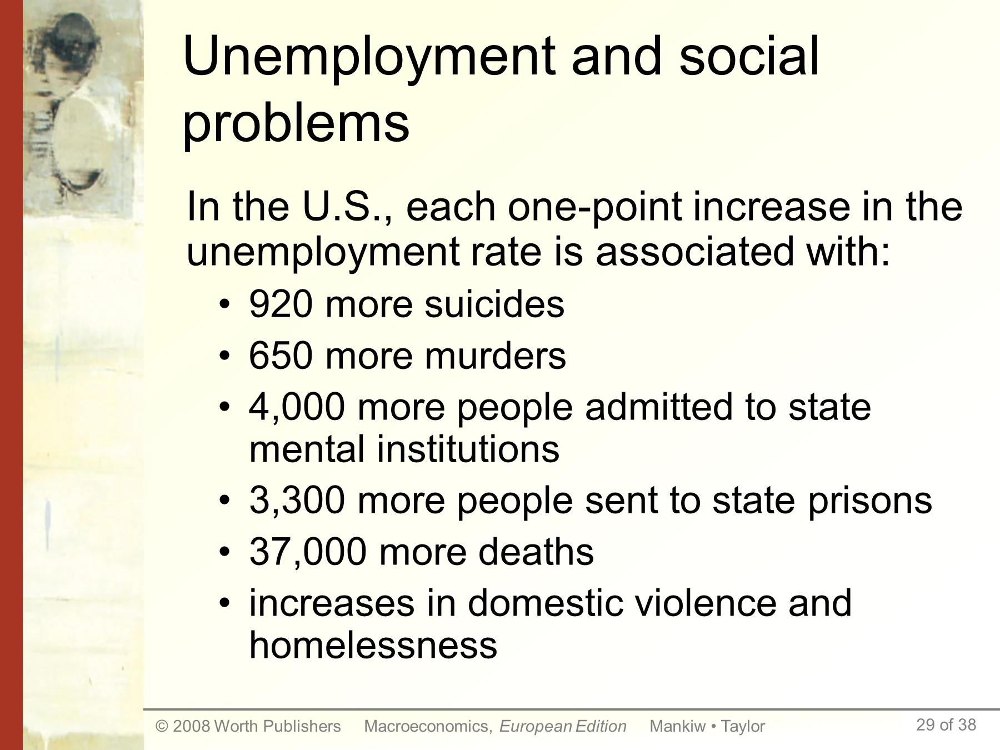
在美国，失业率每上升一个百分点，伴随出现：
这组数字的说服力在量级，弱点在识别。
量级：美国人口三亿，失业率上升一个百分点约对应一百五十万新增失业者，37 000 例超额死亡相当于每四十个新增失业者对应一例。这个比例足以说明，失业的代价远不止工资单上的那一行。
弱点：这是跨年数据的相关性，不是因果。失业率上升的年份往往同时伴随收入下降、房价下跌、财政紧缩，这些因素各自都能推高死亡率。要分离出失业本身的效应，需要找到与失业相关、但与健康冲击无关的外生变动——文献里常用衰退初期行业结构的差异，或者政策造成的地区间冲击差异。
即便打了折扣，方向仍然成立：失业的社会成本大于失业者损失的工资。这一点在评估救助政策时很关键。只算财政成本，会系统性低估不行动的代价；而财政成本是可计量的，社会成本不是，于是预算讨论天然偏向于「省钱」。
Source: Barry Bluestone and Bennett Harrison, The Deindustrialization of America (New York: Basic Books, 1982), Chapter 3, cited in Robert J. Gordon, Macroeconomics, 4th edition (Boston: Little, Brown and Company), p.334.
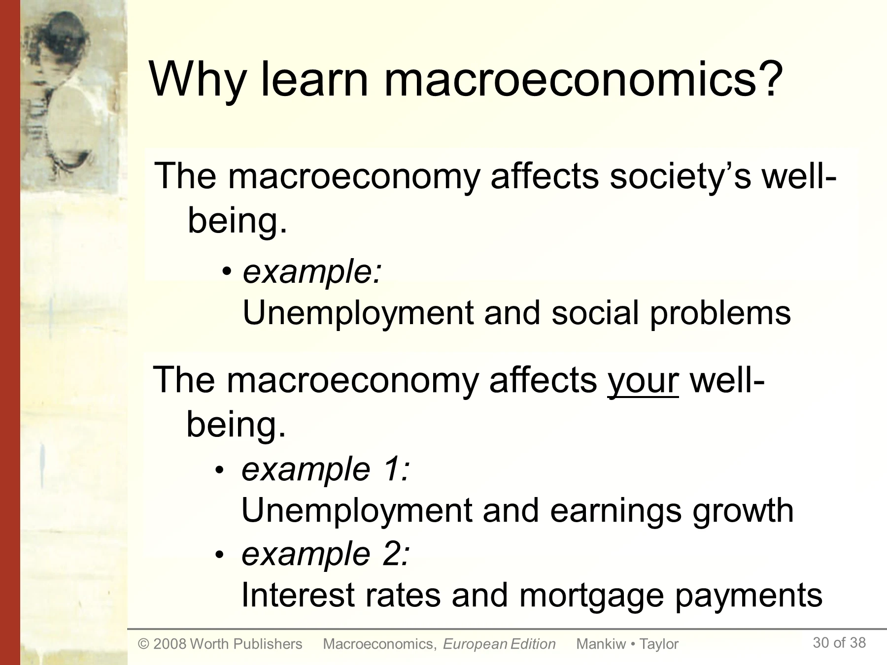
宏观经济影响社会的福祉。
宏观经济影响你自己的福祉。
从社会转到个人，这一页列了两条渠道。
失业与收入增长：即使没有失业，处在高失业环境里的人涨薪也更难。这条渠道在下一页有数据。
利率与按揭还款：利率变化直接改变月供，进而改变能买得起什么样的房子。这条渠道在 1-32 有算例。
两条渠道的共同点是：宏观变量通过价格进入家庭预算，而不是通过「经济好不好」这种笼统的感受。把新闻里的数字翻译成自己的账单，是学这门课最实际的收获——通胀率、利率、失业率都不是抽象指标，它们各自对应一个具体的支出项目。
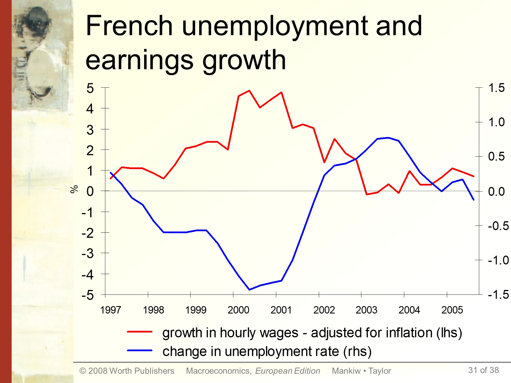
图中 横轴为失业率的十二个月变化（百分点），纵轴为实际工资的年增长率（%）。散点整体向右下方倾斜：失业率上升的年份，实际工资增长较低甚至为负。
散点整体向右下方倾斜，机制并不复杂：失业率上升意味着找工作的人多于岗位，雇主的替代成本下降，工资谈判的筹码转向雇主一侧，名义工资涨得慢；通胀不变时，实际工资就更慢。失业率下降时反过来，雇主招人难，工资必须给得更高。
法国 2002 年到 2004 年那段最典型：失业率上升，实际工资增长率掉到零附近。这里要注意，「实际工资增长为零」不等于「工资下降」——名义工资还在涨，只是涨幅刚好等于通胀。这一点常被误读成「法国工人被降薪」。
长期看，散点云的中心在零以上，因为生产率在增长，实际工资随之上升。失业影响的是围绕这条长期趋势的偏离，不是趋势本身。混淆两者，就会把周期性现象当成结构性衰败。
还有一个不对称：失业率上升时工资增长掉得快，失业率回落时工资增长恢复得慢。这种不对称意味着劳动力市场的调整有黏性，也解释了为什么衰退之后工资增长往往滞后好几年，而物价已经恢复。
When the unemployment rate is rising, tens or hundreds of thousands of people are losing their jobs. Hopefully our students will not be among them. But the rising unemployment rate even affects those who don’t lose their jobs. As the graph shows, during most years there is a clear negative relationship between the (12-month) change in unemployment and the annual growth rate of real wages. In plain English, rising unemployment, as observed in France between 2002 and 2004 is associated with falling wage growth. So when the economy goes into recession, even if our students get to keep their jobs, they will find it much harder to get a pay rise, and some times may even have to accept a small real wage cut. The long run average real wage growth tends to be positive however because of productivity growth.
Students find this relationship intuitive. When unemployment is rising, the supply of workers is rising faster than demand, so wages grow more slowly or even fall. Conversely, falling unemployment gives workers more bargaining power over wages, as it becomes increasingly hard for employers to replace their workers, and increasingly easy for workers to find good opportunities with other companies.
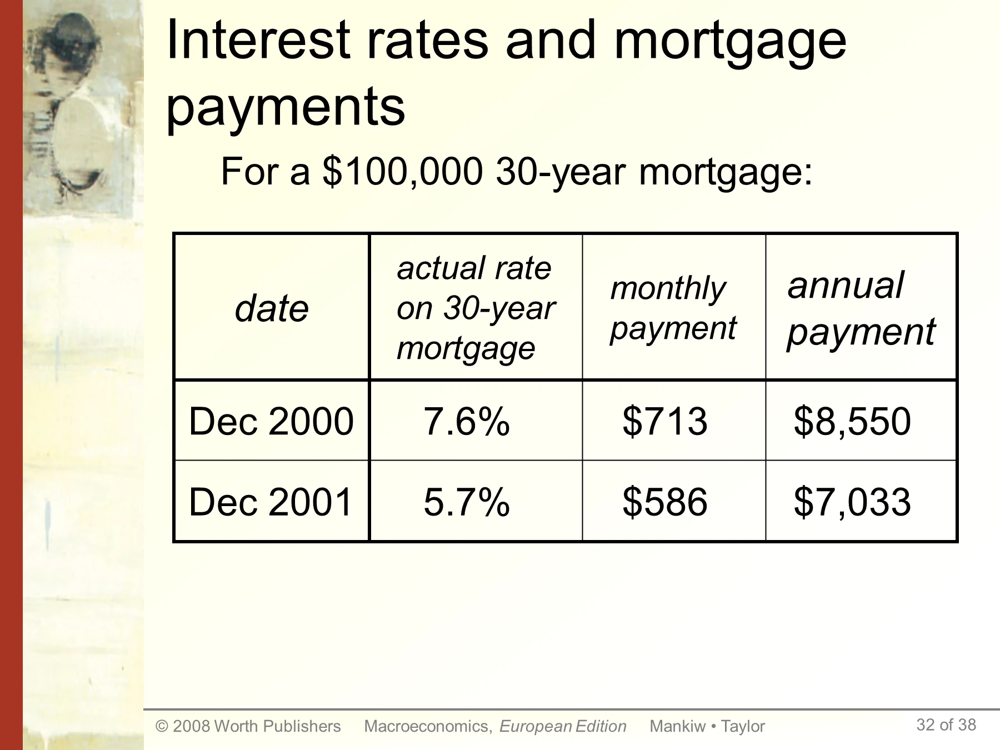
以一笔 100 000 美元、30 年期的按揭贷款为例：
| 日期 | 30 年期按揭实际利率 | 月供 | 年供 |
|---|---|---|---|
| 2000 年 12 月 | 7.6% | $713 | $8 550 |
| 2001 年 12 月 | 5.7% | $586 | $7 033 |
这张表给了一个可以把公式代进去的算例。等额本息按揭的月供由年金公式给出：
M = P · (i/12) / [1 − (1 + i/12)^(−360)]2000 年 12 月，利率 7.6%，月利率 0.6333%，分母 1 − 1.006333^(−360) ≈ 0.897，月供 ≈ 100000×0.006333/0.897 ≈ 706 美元。页面上写 713，差额来自合同利率略高于报价利率（含点数与费用）。
2001 年 12 月，利率 5.7%，月利率 0.475%，分母 ≈ 0.818，月供 ≈ 580 美元，页面写 586。
差多少：713 − 586 = 127 美元/月，一年 1524 美元。三十年下来总付款相差约 4.5 万美元，超过本金的一半。利率下降不到两个百分点，总还款减少四成——这就是为什么利率是宏观政策影响家庭最直接的渠道。
这里的关键不是算术，是杠杆：房贷期限长、本金大，所以对利率的敏感度远高于一般消费。同样的利率变动，对一笔三年期车贷几乎没有影响，对三十年期房贷则是决定性的。
常见误读：把「月供下降」理解成「房子变便宜」。房价与月供是两个变量，利率下降往往同时推高房价，因为买家的支付能力上限被抬高了。
Here’s another example of how the macroeconomy directly affects the wallets of most people, including most of our students after they graduate.
Interest rates are determined by economic factors and by the policy of Central Banks (all of which students will learn about in your course). Rates, in turn, impact the size of our car payments and mortgage payments, which affect how nice a car or a house we can afford. To illustrate, let’s see how the actual interest rate changes during 2001 affected the typical £100,000 floating rate 30-year mortgage in the UK. (time series of national retail interest rates can be obtained at www.ecb.int. Throughout most of Europe mortgages have fixed rates for periods of at least 5 years. This is not the case in the U.K.)
The Bank of England reduced interest rates several times in 2001, from 6% to 4%. Because most interest rates tend to move in the same direction, mortgage rates have fallen as well (though slightly less than base rates).
This data shows that people who bought homes at the end of 2001 had to pay significantly smaller total interest payments per year on their mortgage than people who bought homes just a year earlier. In the example, the difference is more than £1,500 per year (which corresponds to almost €2,500). You can buy a lot of pizza and compact discs with £1,500.
Of course, when inflation is heating up, the BoE raises rates, and then home ownership becomes more costly.
What if your students are renters? Well, changes in mortgage rates affect demand for apartments, since home ownership and renting are substitutes. An increase in mortgage rates will shift demand toward rentals. Then, when it’s time to renew your lease, you’ll find that your landlord has raised your rent. And why shouldn’t she? With high demand for flats, it would be easy for her to find someone to move in to your flat if you don’t accept the rent increase.
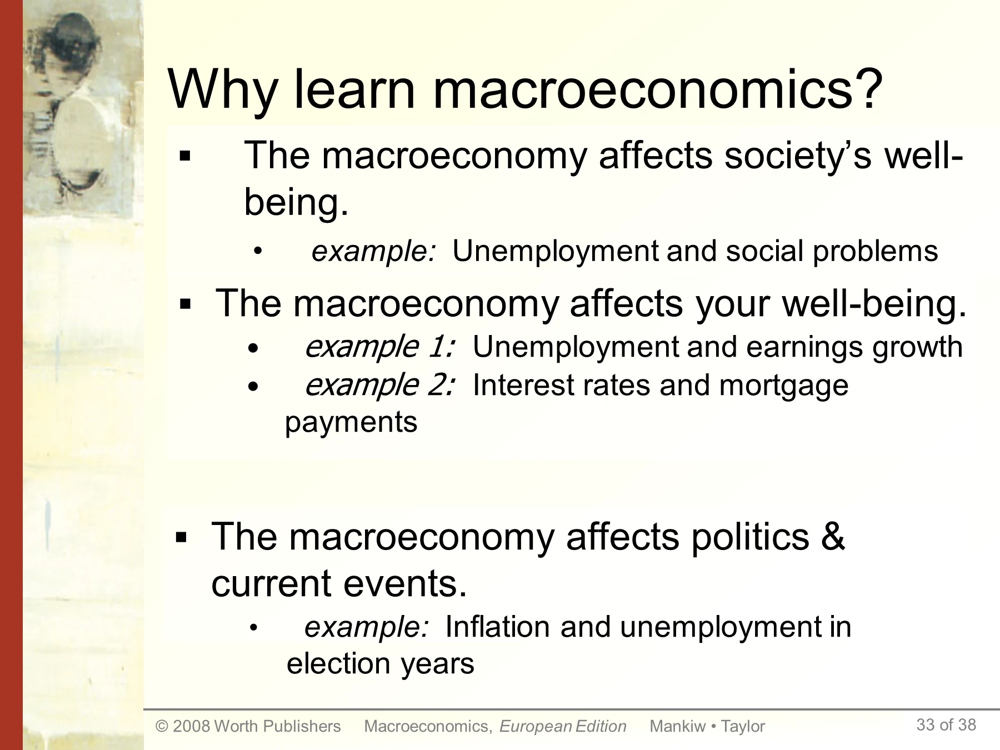
宏观经济影响社会的福祉。
宏观经济影响你自己的福祉。
宏观经济影响政治与时事。
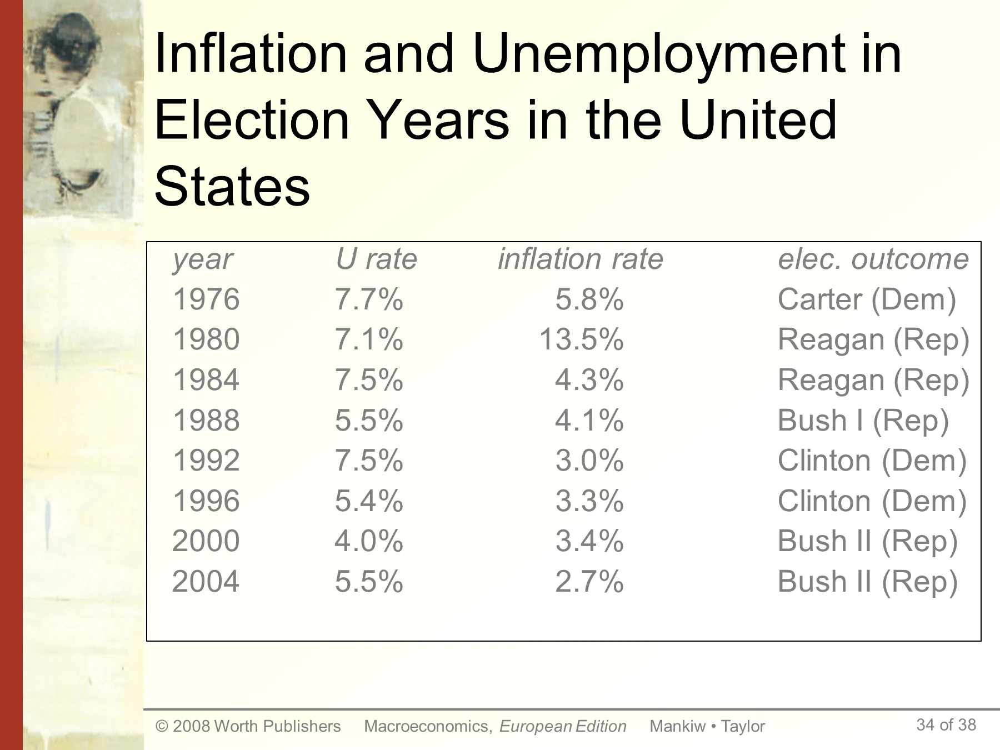
| 年份 | 失业率 | 通胀率 | 选举结果 |
|---|---|---|---|
| 1976 | 7.7% | 5.8% | 卡特（民主党） |
| 1980 | 7.1% | 13.5% | 里根（共和党） |
| 1984 | 7.5% | 4.3% | 里根（共和党） |
| 1988 | 5.5% | 4.1% | 布什一世（共和党） |
| 1992 | 7.5% | 3.0% | 克林顿（民主党） |
| 1996 | 5.4% | 3.3% | 克林顿（民主党） |
| 2000 | 4.0% | 3.4% | 布什二世（共和党） |
| 2004 | 5.5% | 2.7% | 布什二世（共和党） |
这张表列了八次大选，读法是看哪一年现任者输了，以及那一年的两个数字。
输了的三次：1976 年（失业 7.7%、通胀 5.8%）、1980 年（7.1%、13.5%）、1992 年（7.5%、3.0%）。共同点是失业率在 7% 以上。赢的几次里，1984 年失业率仍有 7.5%，但通胀从 13.5% 降到 4.3%，选民感受到的是「在变好」；1996 年失业率降到 5.4%；2004 年 5.5% 且经济平稳。
所以关键不是水平，而是方向与变化。选民惩罚的是恶化，不是糟糕的绝对值。1984 年与 1980 年的失业率几乎一样，结果却相反，差别就在通胀的走势上。
2000 年是反例，也是这张表最值得说的一行：经济很好，执政党候选人赢了普选票，却输了选举人团。制度细节可以覆盖经济逻辑，这一点在任何「经济决定选举」的论断里都要留出余地。
八次观测、两个变量、没有控制其他因素，这张表能说明相关性，不能说明因果。样本量不够，而且「经济好」的定义本身就可以事后调整。
When the economy is doing poorly, there tends to be a change in the party that controls the White House.
1976: The rates of inflation () and unemployment (u) both high. Incumbent (Ford, R) loses.
1980: u still high, even higher. Incumbent (Carter, D) loses.
1984: u still high, but much lower. Incumbent (Reagan) wins.
1988: the same, u much lower. Incumbent party wins.
1992: low, but u much higher (and was higher yet in 1991). Incumbent loses.
1996: u much lower, incumbent wins.
2000: Economy doing great, and incumbent party candidate (Gore, D) wins majority of popular vote, but loses electoral college to challenger.
2004: The economy is doing reasonably well and the incumbent is re-elected.

我们有模型！
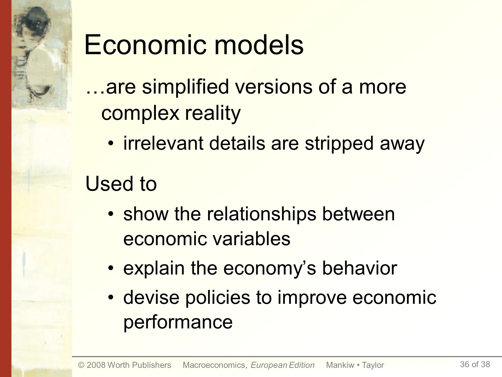
……是对更复杂的现实所做的简化版本
用来
模型这个词在经济学里没有贬义。它的定义就是这一页的第一句：对更复杂的现实所做的简化，把无关的细节剥掉。
「无关」是相对于问题而言的。要判断钢材涨价对车价的影响，车的颜色、经销商的广告策略、买家的品牌偏好都可以剥掉；要判断一款新车能否成功，这些恰恰是核心。同一个现实，不同的问题，需要剥掉的东西不同。
模型的用途有三个层次：描述变量之间的关系、解释经济为什么这样运行、据此设计政策。第三层最容易出问题——从「关系」跳到「政策」，中间要经过「改变这个变量之后，其他变量会怎样」的判断，而这个判断依赖模型的结构有没有抓对机制。
判断一个模型好不好，不看假设是否逼真，看它能否在所问的问题上给出可检验的推论。这条标准会一直用到最后一章。
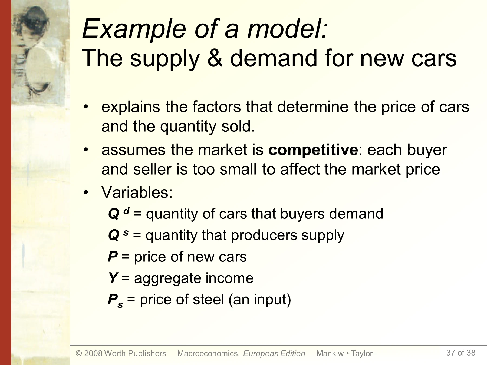
解释决定汽车价格与销售量的因素。
假设市场是竞争性的：每个买者和卖者都太小，无法影响市场价格。
变量：
汽车市场是一个刻意选择的例子：它足够熟悉，又足够简单。
竞争性假设在这里明显不成立——通用、丰田、大众都不是价格接受者。但如果只想知道钢材涨价或收入下降会让车价和销量怎么变，这个假设是可以接受的：它简化了分析，而不改变结论的方向。
变量分成两组。Qd、Qs、P 是要解释的；Y 和 Ps 是给定的。这个划分不是市场本身的属性，而是建模者的选择：如果问题换成「什么决定了总收入」，Y 就要从外生变成内生，模型也随之改变。
假设的现实性不是标准，假设是否影响所问问题的答案才是标准。这是这一页真正要传达的方法论，也是后面每一次面对「这个假设不真实」的质疑时的回答方式。
Students will realize that the car market is not competitive. However, if all we want to know is how an increase in the price of steel or a fall in consumer income affects the price and quantity of cars, then it’s fine to use this model.
In general, making unrealistic assumptions is okay, if they simplify the analysis without affecting its validity.
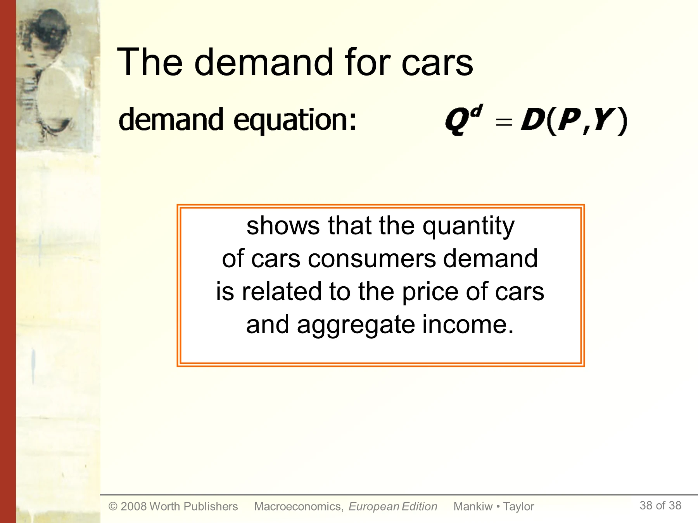
说明消费者对汽车的需求量，与汽车价格和总收入之间的关系。
图中 原页为图片，示意汽车需求量与价格、总收入之间的函数关系。
需求关系写成 Qd = D(P, Y)：汽车的需求量取决于车价和总收入。
两个自变量的符号相反。P 上升，需求量下降——这是需求定律，替代效应与收入效应同向。Y 上升，需求量上升——汽车是正常品，收入增加时家庭从一辆车变两辆，从低配变高配。
页面上的图把 Y 固定在某个值，只画 P 与 Qd 的关系，得到一条向下倾斜的曲线。被固定的变量没有消失，它变成了曲线位置的一部分：Y 变化时整条曲线移动，而不是沿着曲线滑动。这个区分是后面所有图形分析的基础。
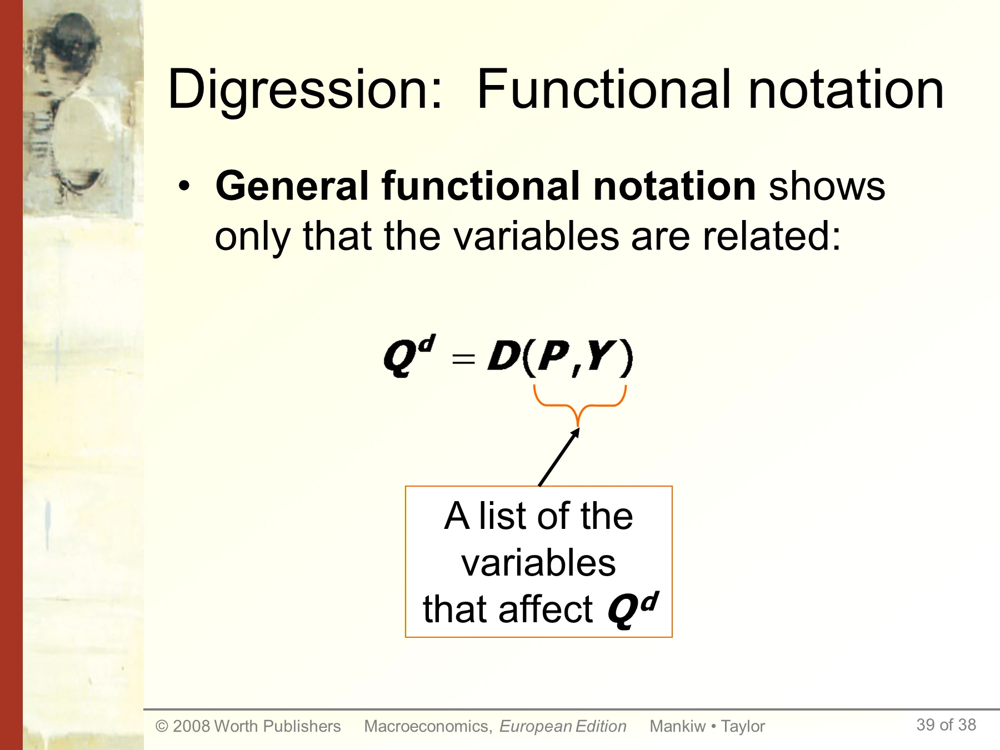
一般函数记号只表明这些变量之间存在关系：
Qd = D(P, Y)括号里是影响 Qd 的变量清单。
D(P, Y) 只说明一件事：Qd 与 P、Y 有关系，不说明是什么关系。方向、大小、是否线性，一概不论。
括号里的变量清单本身就是模型的内容。列进 Y，就是断言收入影响汽车需求；不列进利率，就是断言利率在这个问题里可以忽略。清单的取舍决定了模型能回答什么，也决定了它在什么地方会失效。
这种写法在宏观里用得极多，因为多数时候我们只需要知道方向：某个变量上升，另一个变量会上升还是下降。方向性的结论对政策讨论往往已经够用，而定量的结论需要估计参数，成本高得多，也更容易被数据争议拖住。
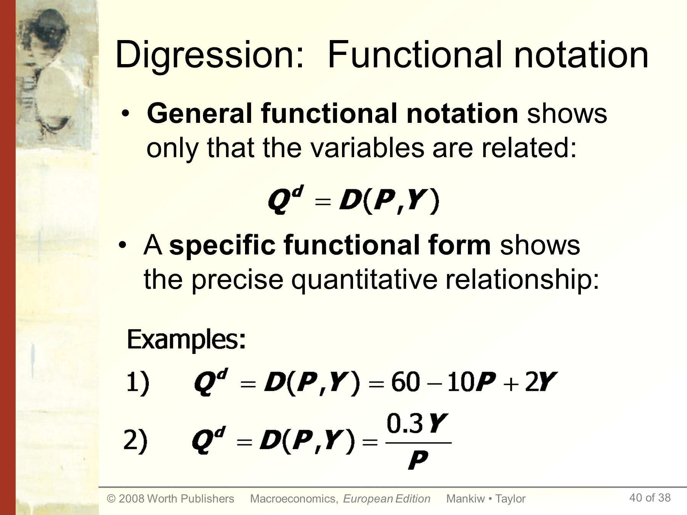
一般函数记号只表明这些变量之间存在关系：
Qd = D(P, Y)具体函数形式则给出精确的数量关系，例如：
Qd = 60 − 10P + 0.3Y图中 原页以三张图片给出记号对照：一般形式、具体形式，以及两者并排的比较。
具体函数形式把「有关系」变成「有多少关系」。
式中的系数就是斜率：P 每涨 1 个单位，需求量减少 10 辆；Y 每增加 1 个单位，需求量增加 0.3 辆。代入 P = 2、Y = 100，得到 Qd = 60 − 20 + 30 = 70。有了这个式子，任何一组价格与收入都能算出对应的需求量，不需要再画图。
线性形式的好处是可以直接解出均衡，坏处是把关系固定成常数斜率——现实中需求曲线在价格很高时往往更平坦，因为替代品变多了。选择哪种形式，取决于问题需要多高的精度。
一般形式与具体形式的分工，对应研究的两个阶段：先确定哪些变量进入模型，再估计它们各自的作用大小。前一阶段靠经济逻辑，后一阶段靠数据，两者的错误类型完全不同。
We often aren’t concerned with the exact quantitative relationship between variables, so we will often just use the general functional notation.
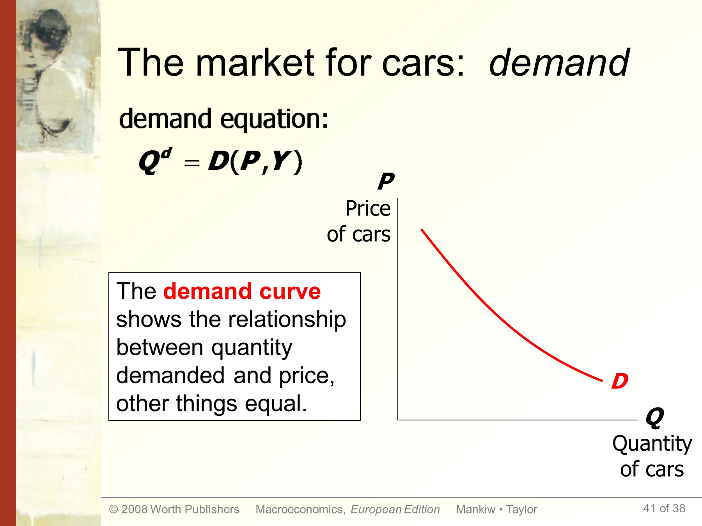
图中 横轴 Q 为汽车数量，纵轴 P 为汽车价格；需求曲线 D 自左上向右下倾斜，沿曲线的箭头表示价格变动引起的需求量变动。
需求曲线表示在其他条件不变时，需求量与价格之间的关系。
需求曲线是把三维关系压成二维的结果：固定 Y，画出 P 与 Qd 的对应。
「其他条件不变」这五个字是整条曲线的合法性来源。它允许我们说「价格上升，需求量下降」，而不必担心收入同时变化把结论搅乱。一旦其他条件变了，这条曲线就不再代表原来的关系。
沿曲线移动与曲线移动是两件不同的事。价格变化导致沿曲线移动；收入、偏好、替代品价格变化导致整条曲线平移。把两者混起来，就会得出「价格上升、需求也上升」这种看似矛盾、其实只是两条曲线交错的结论——这也是初学者读图时最常犯的错误。
一条曲线只记录一个变量对，其余变量的影响都藏在曲线的位置上。
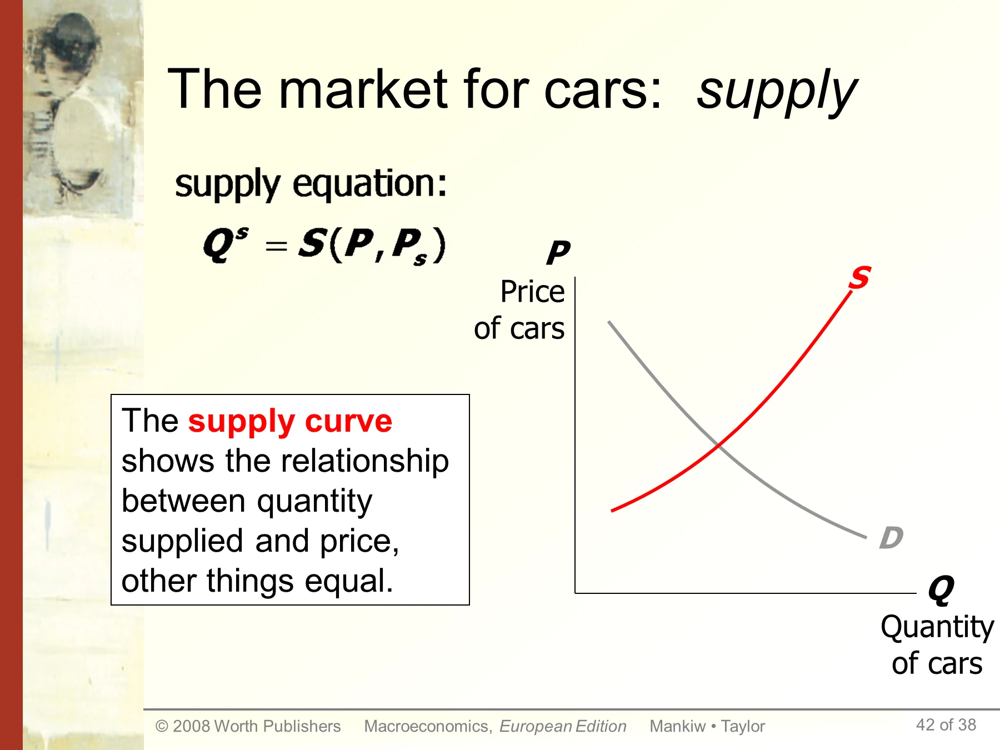
图中 横轴 Q 为汽车数量，纵轴 P 为汽车价格；供给曲线 S 自左下向右上倾斜，与需求曲线 D 同处一个坐标系。
供给曲线表示在其他条件不变时，供给量与价格之间的关系。
供给曲线向上倾斜，理由是边际成本递增：要生产更多汽车，需要加班、启用效率较低的产线、支付更高的原材料价格。价格必须上升，厂商才愿意多生产。
和需求曲线一样，它也是在「其他条件不变」下画出来的。这里的「其他条件」包括钢材价格、工资、技术。Ps 上升时，每一价格下的供给量都减少，整条曲线左移。
两条曲线的形状差别，决定了同一冲击在市场上的表现：供给左移时价格上升、数量下降；需求右移时价格上升、数量上升。价格同向而数量反向，这个差别是下一节区分两类冲击的依据，也是宏观里区分需求冲击与供给冲击的图形基础。
An example of the second variable in the bracket is input price.
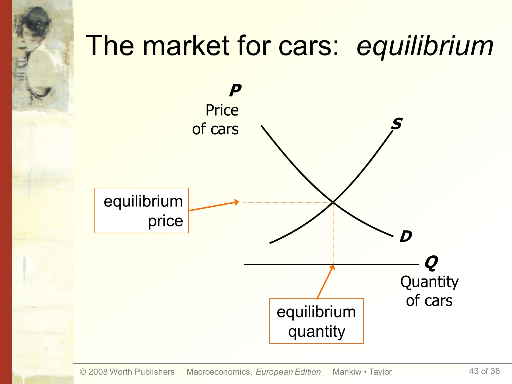
图中 横轴 Q 为汽车数量，纵轴 P 为汽车价格；D 与 S 相交，交点对应的价格为均衡价格 P*，对应的数量为均衡数量 Q*。
两条曲线相交，得到均衡价格与均衡数量。
均衡不是「恰好发生」，而是「偏离会被推回」。价格高于交点时，供给量大于需求量，卖不出去的厂商降价；价格低于交点时，排队与缺货出现，买家加价。两股力量都把价格推向交点，所以这个交点是一个稳定的停留处，而不是一次巧合。
这个调整过程依赖一个前提：价格可以自由变动。如果价格被合同、菜单成本或管制固定住，偏离就不会被推回，数量调整取代价格调整——市场上出现的是排队、配给或失业，而不是新的均衡价格。
这条分岔是短期与长期分析的分界，也是 1-50 之后所有讨论的伏笔：同一张供需图，在价格弹性和价格黏性两种假设下，讲的是两个不同的故事。
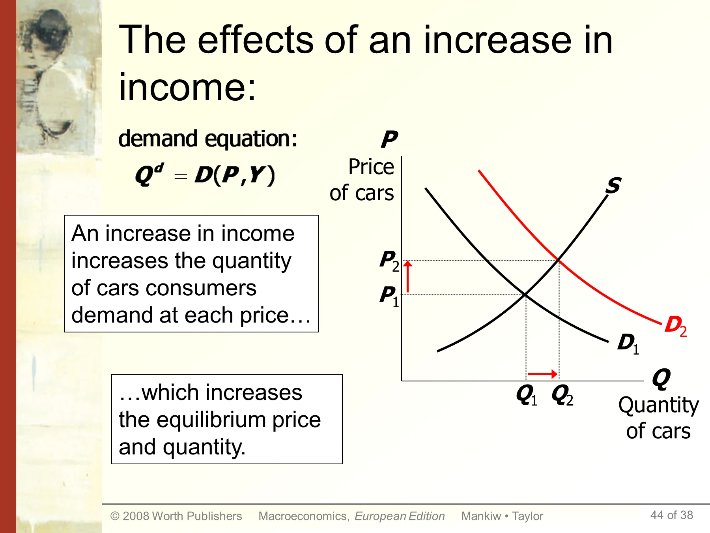
图中 需求曲线由 D1 右移至 D2；均衡点由 (Q1, P1) 移至 (Q2, P2)，价格与数量同时上升。
收入增加使消费者在每一价格下都需求更多的汽车……
……这提高了均衡价格与均衡数量。
收入上升，需求曲线右移。在每一价格下，消费者想买的车更多了。
新的交点：价格从 P1 升到 P2，数量从 Q1 升到 Q2。两件事同时发生，因为供给曲线向上倾斜——厂商愿意多生产，但要更高的价格才愿意。如果供给曲线是垂直的（产能完全固定），收入上升只会推高价格，产量不变；如果供给曲线是水平的（成本不变），价格不动，产量增加。
移动的幅度取决于两条曲线的斜率。同一个需求冲击，在平坦的供给下表现为「量增」，在陡峭的供给下表现为「价涨」。同一张图上，价格和数量的分工由供给弹性决定。
这也解释了为什么房地产、教育、医疗的价格在需求上升时涨得特别凶：这些部门的供给曲线很陡，产能扩张受土地、资质、人力的限制，需求一增加，几乎全部反映在价格上。
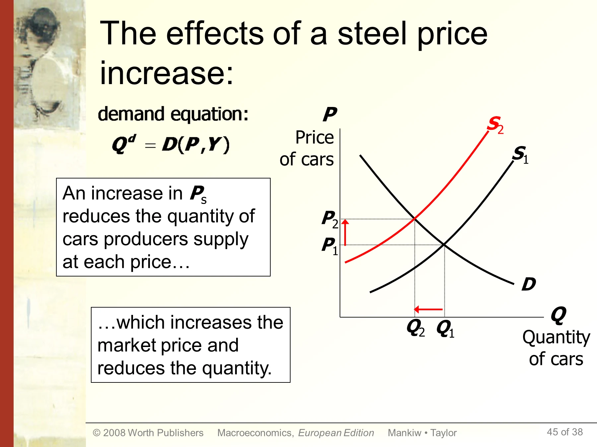
图中 供给曲线由 S1 左移至 S2，需求曲线 D 不动；均衡点由 (Q1, P1) 移至 (Q2, P2)，价格上升、数量下降。
Ps 上升使生产者在每一价格下都供给更少的汽车……
……这提高了市场价格，减少了数量。
钢材涨价，供给曲线左移。每一价格下，厂商愿意生产的车变少，因为成本抬高了。
新交点：价格从 P1 升到 P2，数量从 Q1 降到 Q2。
和上一页对比着看，这一页的价值才显现。两种冲击都让价格上升，但数量的方向相反：需求冲击带来价量齐升，供给冲击带来价升量减。只看价格，分不清是哪一种冲击；加上数量，才能识别。价格是两种冲击共有的信号，数量是区分它们的判别式。
这个区分在宏观里对应需求拉动型通胀与成本推动型通胀。前者伴随产出上升，后者伴随产出下降。1970 年代的滞胀就是后者的典型——油价冲击让价格与失业同时上升，而当时以需求管理为核心的凯恩斯框架无法解释这个组合，因为它假设价格与产出总是同向变动。
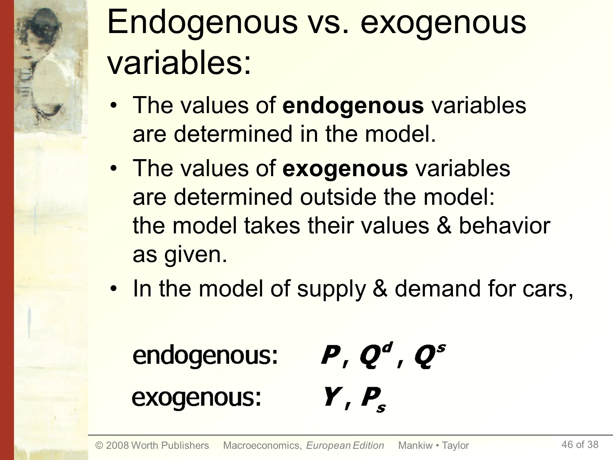
内生变量的值由模型内部决定。
外生变量的值由模型外部决定：模型把它们的取值与行为当作给定。
在汽车的供给与需求模型中，
图中 两组标注：内生变量为 P 与 Q；外生变量为 Y 与 Ps。
内生与外生的区分，是建模时最容易被含糊过去的一步，也是后面每一章开头都要重新确认的一步。
在汽车模型里，P 和 Q 是内生的，Y 和 Ps 是外生的。关键在于：这个划分不是变量本身的属性，而是模型的设计。同一个 Y，在汽车模型里是外生，在增长模型里就是内生——因为增长模型要解释的正是 Y 为什么增长。
划分的标准是问题。要解释什么，什么就是内生；其余的都可以暂时当作给定。划分错了，模型要么循环论证（用 Y 解释 Y），要么答非所问。
还有一个技术性的后果：外生变量变化是曲线的移动，内生变量变化是沿曲线的移动。图形分析里的每一条「移动」，背后都是一次外生冲击；而交点位置的每一次改变，都是内生变量在响应。把这两类变化分开，图形才有解释力。
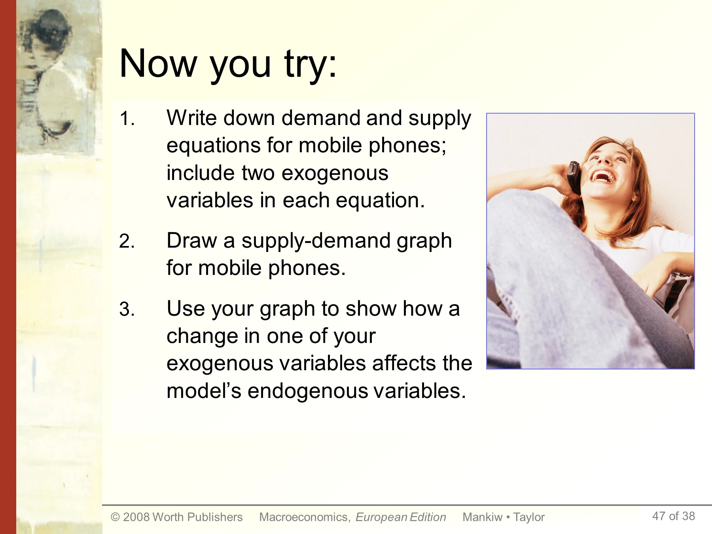
这道练习值得完整做一遍，因为它是后面所有模型的模板。
设手机需求 Qd = 200 − 3P + 0.1Y，供给 Qs = 50 + 2P − 5Pc，其中 Y 是收入、Pc 是芯片价格，两者都是外生。
令 Qd = Qs：200 − 3P + 0.1Y = 50 + 2P − 5Pc，解得 P = 30 + 0.02Y + Pc。代入 Y = 1000、Pc = 10，得 P = 60，Q = 120。
让 Pc 从 10 涨到 12：P 变成 62，Q 变成 114。价格上升、数量下降，与钢材涨价的结论一致。让 Y 从 1000 涨到 1200：P 变成 64，Q 变成 126，价量齐升，与收入增加的结论一致。
解出内生变量的表达式，比画图更有用：表达式能直接看出每个外生变量影响的方向和大小，图形只能给出方向。画图是为了讲给别人听，解方程是为了自己算清楚。
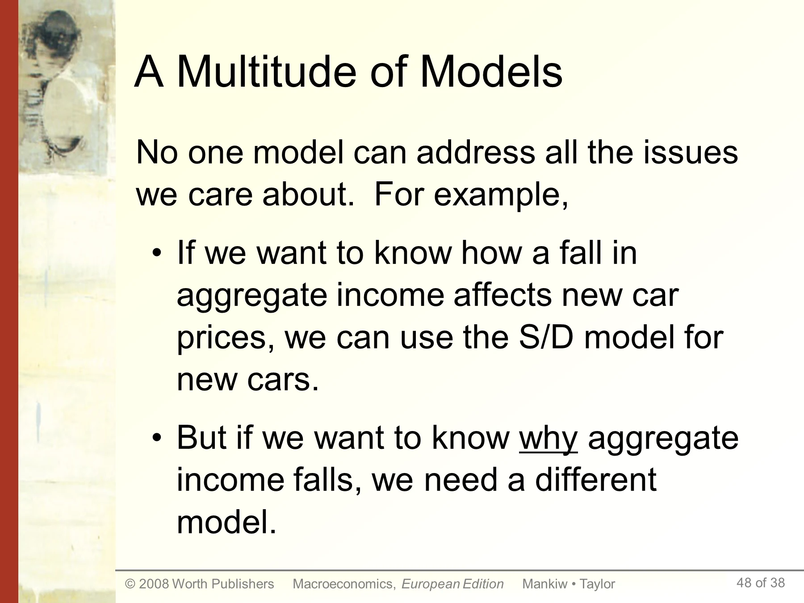
没有一个模型能处理我们关心的全部问题。例如，
一个模型只能回答它设定的那组问题。
汽车供需模型能告诉你收入下降会让车价跌多少，但不能告诉你收入为什么下降——因为 Y 在这个模型里是外生的，它的变化被当作给定。这不是缺陷，而是分工。
要解释 Y，需要另一个模型：收入由什么决定，消费、投资、政府支出如何构成，储蓄如何转化为投资。在那个模型里 Y 变成内生，而利率或货币供给可能变成外生。
模型的边界由外生变量的清单划出来：清单之外的东西，模型一律不解释。所以看到任何一个模型，第一件事是问它把什么当成了给定——那个「给定」，就是它答不了的问题。
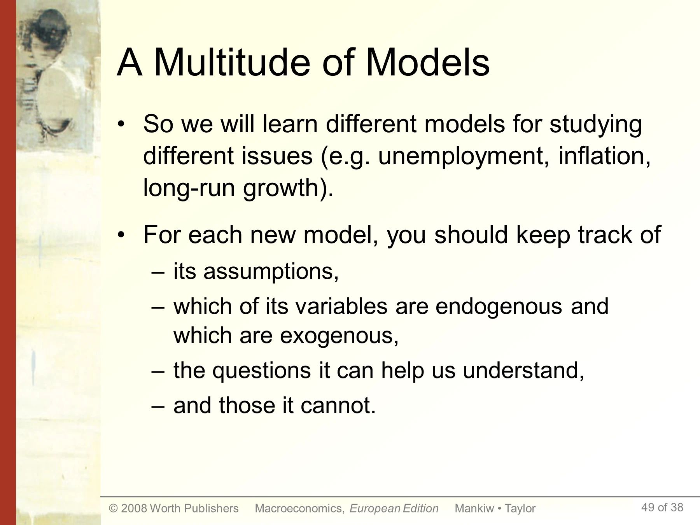
所以我们会用不同的模型研究不同的问题（例如失业、通胀、长期增长）。
对每一个新模型，都要盯住：
于是这门课会有很多个模型。每学一个新的，要盯住四件事：假设是什么、哪些变量内生哪些外生、它能回答什么、它不能回答什么。
第四条最容易被跳过。一个模型失效的地方，往往比它成立的地方更能说明它的结构：汽车模型解释不了收入下降，正说明它把收入当成了给定；总需求模型解释不了长期增长，正说明它把资本存量和技术当成了给定。
把这四条记在每一章的开头，后面就不会出现「用错模型」的错误。那种错误通常不是算错，而是问了模型没打算回答的问题——算得越准，错得越远。
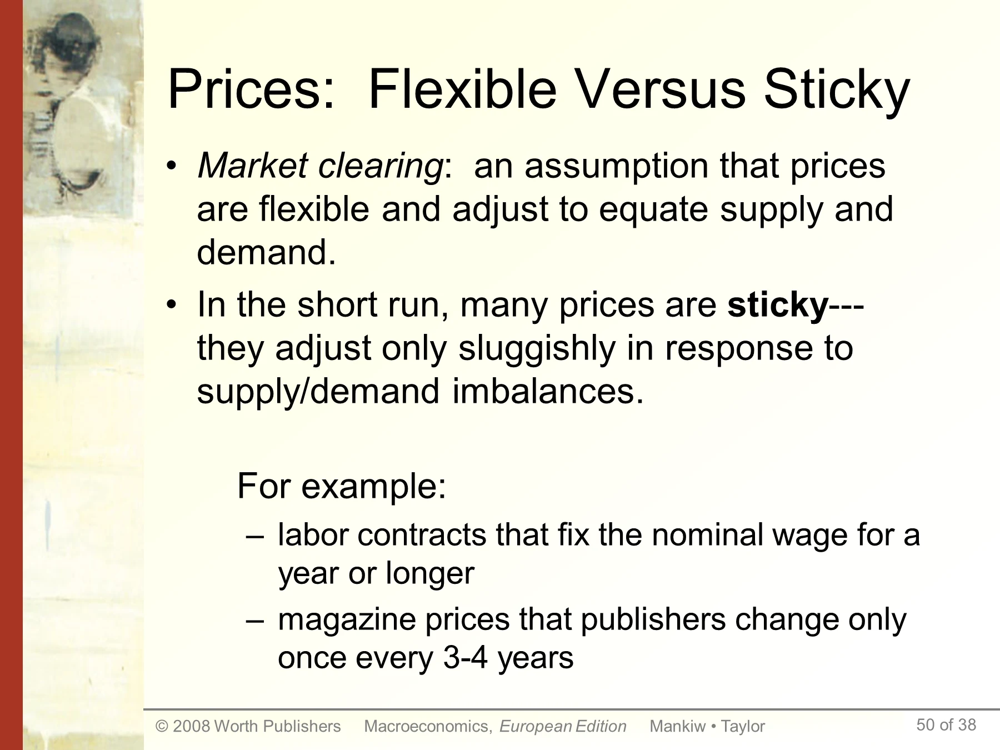
市场出清：假设价格是弹性的，会调整到使供给等于需求。
在短期，许多价格是黏性的——它们对供求失衡只做出迟缓的调整。例如：
价格能不能自由调整，是这本教材最重要的一条假设，也是整门课的分水岭。
市场出清假设价格有弹性：供求失衡时价格立刻变动，直到相等。这个假设在农产品、金融市场、外汇市场大致成立，因为这些市场的价格调整成本很低，一笔交易就能改价。
短期里很多价格不动。劳动合约把名义工资固定一年以上；杂志定价三四年才改一次；餐厅菜单重印有成本。这些现象的共同点是调整有成本，而成本使得「不动」在短期内是理性的选择。
黏性不是愚蠢，是理性的延迟。厂商知道涨价会流失客户，于是等一等，看成本变化是暂时的还是永久的。等到所有人都调整，价格水平才整体上移——这就是为什么货币供给变化在短期有实际效果，在长期没有。
时间尺度是这条假设的关键。一年之内，合约还没到期，价格黏；十年之后，所有合约都重签过，价格弹性。同一个经济，两个时间尺度，两套结论，不是理论互相矛盾，而是各自描述不同的调整阶段。
In microeconomics you will usually consider only the first case. In macroeconomics however the fact that prices do not adjust fully at once can be very important in describing how the economy behaves and what government policy is most appropriate.
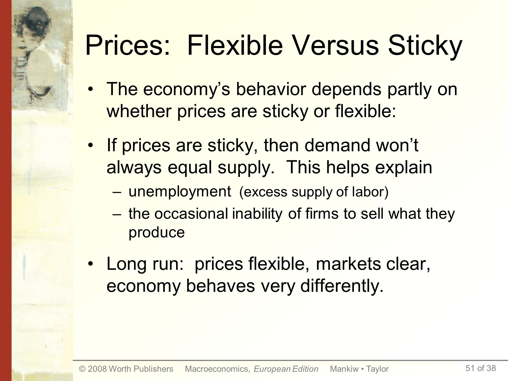
经济的表现部分取决于价格是黏性的还是弹性的：
如果价格是黏性的，需求就不总等于供给。这有助于解释
长期：价格弹性，市场出清，经济表现很不一样。
黏性价格的第一个后果是数量调整取代价格调整。
如果工资不能下调，劳动市场出现超额供给时，价格（工资）不动，调整落在数量上——企业少雇人，失业出现。这就是非自愿失业的来源：这些人愿意在现行工资下工作，但岗位不存在。在出清模型里，这种现象不可能持续存在，因为工资会一直降到有人愿意雇为止；在黏性模型里，它可以持续好几年。
商品市场同理。价格不能下调时，需求不足表现为卖不出去，而不是降价出清。厂商的反应是减产、裁员，而不是降价。于是最初的需求冲击被放大成产出波动——这就是乘数效应的微观来源。
第二个后果是政策有了作用空间。价格弹性时，货币扩张只会推高价格；价格黏性时，同样的扩张会提高实际产出，因为名义变量变了而价格没跟上，实际货币余额增加，利率下降，需求上升。货币政策的短期有效性，完全建立在价格黏性上。这句话反过来也成立：如果价格是完全弹性的，中央银行做什么都没有实际效果。
长期则不同。合约重签、菜单重印之后，价格追上货币，实际变量回到原位。这就是长期中性：十年期的货币增长与产出没有系统关系，一年期的关系却很清楚。
常见误读：把「长期中性」理解成「货币不重要」。中性说的是实际变量，不是物价；货币在长期决定了价格水平，只是不决定产出。
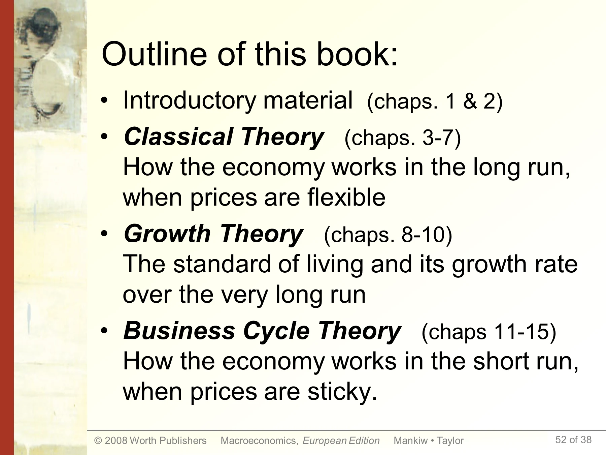
导论性材料（第 1、2 章）
古典理论（第 3–7 章） 价格弹性时，经济在长期如何运行
增长理论（第 8–10 章） 生活水平及其在极长期中的增长率
经济周期理论（第 11–15 章） 价格黏性时，经济在短期如何运行
教材的结构按时间尺度划分，这条线索和上一页的假设直接对应。
第 3 至 7 章是古典理论，价格弹性，解释长期。第 8 至 10 章是增长理论，尺度更长，资本、人口、技术本身都在变。第 11 至 15 章是经济周期理论，价格黏性，解释短期。
三个尺度对应三个不同的问题：为什么有的国家富、为什么有的国家增长快、为什么产出会一年一年地波动。同一个经济体，问法不同，模型不同，结论也不同——同一条政策在三个尺度上的评价可以完全相反。
时间尺度不是修辞，它决定了哪些变量可以当作给定。在短期模型里资本存量给定；在增长模型里资本存量是变量；在超长期里连技术水平都不是给定的。
The portion of the book described on this slide comprises the core material. It is organized around time horizons: the long run (flexible prices), the very long run (growth in capital, the population, and technology itself), and the short run (sticky prices and economic fluctuations).
But wait! There’s more! See the next slide….
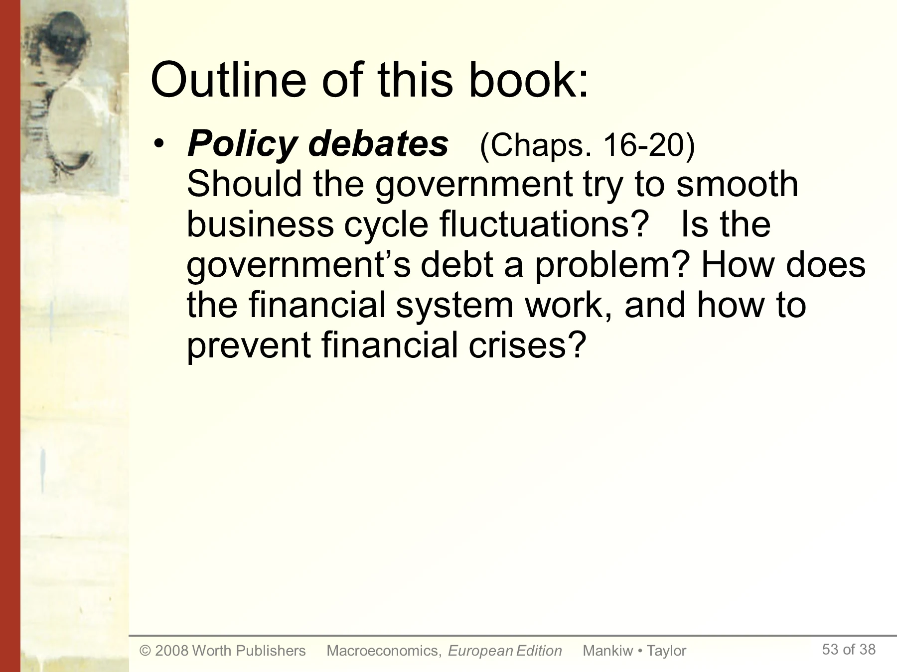
政策争论（第 16–20 章）
最后五章从实证转向规范：该不该做，而不只是会怎样。
要不要平抑周期，取决于两件事：冲击来自需求侧还是供给侧，以及政策时滞有多长。需求冲击下乘数大，财政政策有效；供给冲击下刺激只会推高价格。时滞则决定了「事后补救」可能变成「火上浇油」——识别衰退要几个月，政策生效又要几个月，等到效果出现，衰退可能已经结束。
政府债务是不是问题，取决于利率与增长率的比较。利率低于增长率时，债务/GDP 会自行下降，滚动债务不需要紧缩；反过来则会出现雪球。这个不等式在 2010 年之后成了争论的中心，因为发达国家同时出现了低利率和高债务，两个方向的经验都有。
金融体系那一章是 2008 年之后新增的重点。它把前面所有模型的一个共同缺陷摆上台面：那些模型里没有银行，也没有资产负债表。没有金融部门的模型，解释不了 2008 年那种从资产负债表出发的衰退。
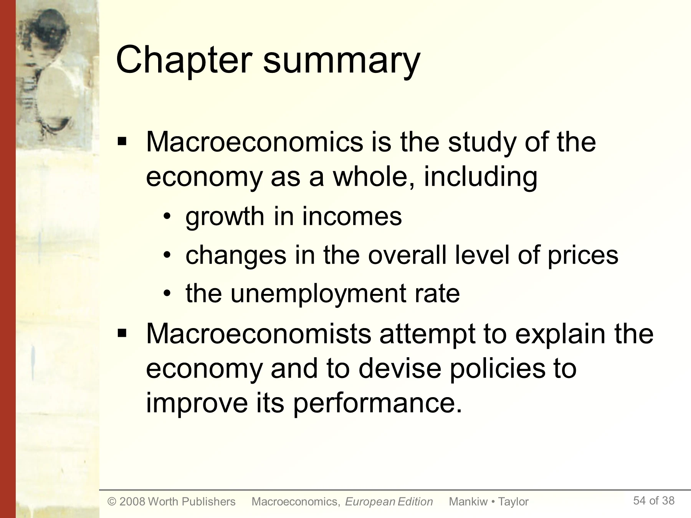
宏观经济学是把经济作为一个整体来研究，包括
宏观经济学家试图解释经济，并设计改善其表现的政策。
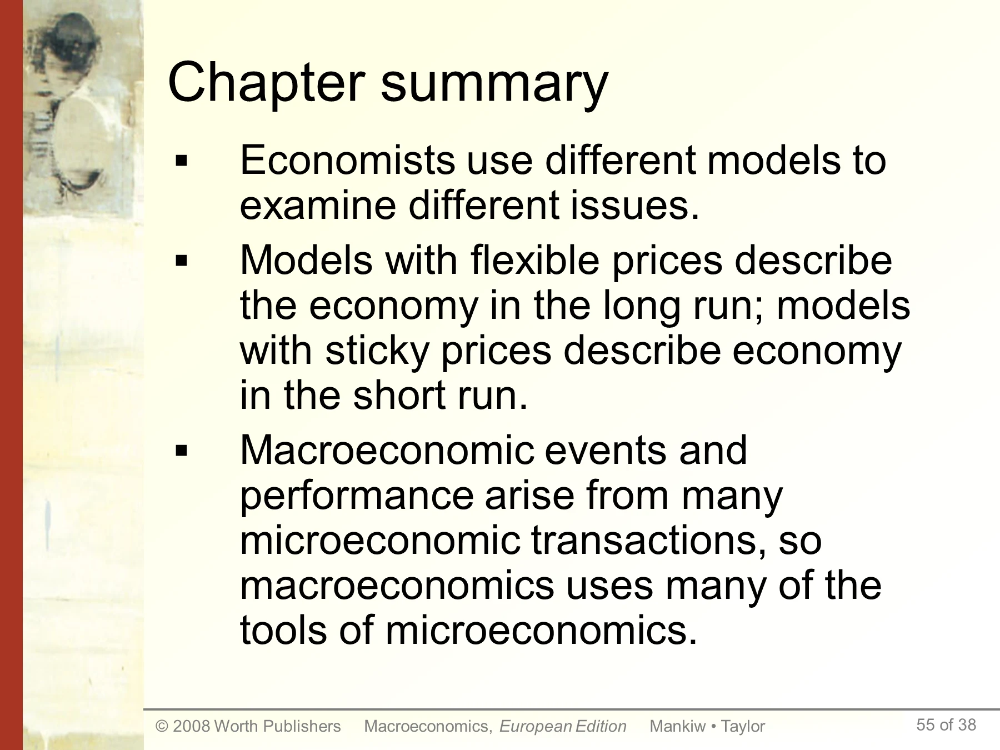
经济学家用不同的模型考察不同的问题。
价格弹性的模型描述长期经济；价格黏性的模型描述短期经济。
宏观经济事件与表现源于许多微观经济交易，因此宏观经济学使用大量微观经济学的工具。
三条总结里，第三条最容易被当成套话，其实它是这门课的方法论根基。
宏观变量是无数微观决策的加总：消费是家庭的选择，投资是企业的选择，就业是匹配的结果。所以宏观模型必须有微观基础——不是把微观结论直接搬过来，而是保证加总之后的结论与个体行为相容。
不相容的例子很多。如果所有人同时增加储蓄，总需求下降，收入下降，最终总储蓄可能不变甚至减少。这个结果在个体层面无法理解（一个人多储蓄一定更富），在总体层面却成立。合成谬误是宏观区别于微观最要紧的地方：个体的理性不等于总体的理性，个体的最优不等于总体的最优。
前两条总结给出的是地图：不同的问题用不同的模型，模型的价格假设决定了它描述的是长期还是短期。地图不等于地形，但没有地图就会在细节里迷路。
这一章没有建立任何理论，它做的是划定范围。宏观经济学研究加总之后的产出、物价与就业，而这三个量各自对应一组问题：产出为什么长期增长、为什么短期波动、物价为什么持续上升。这些问题不能用同一个模型回答，因为解释长期水平的力量和解释短期偏离的力量不是同一组——资本、人口、技术决定位置，需求、预期、价格调整的迟滞决定抖动。
全章最重要的一条假设在最后几页才出现：价格是弹性的还是黏性的。弹性价格下，供求失衡由价格吸收，产出由实际因素决定，货币只影响物价；黏性价格下，失衡由数量吸收，失业与卖不出去同时出现，名义变量的变化能够改变实际产出。长期与短期的分野，本质上就是这条假设的分野，而不是两套互不相干的理论。理解这一点，后面每学一个新模型，都能立刻判断它属于哪一个时间尺度。
三个案例提供了这条假设的现实对应。津巴布韦的恶性通胀说明财政赤字如何通过印钞变成物价失控，以及为什么「删零」不是政策；美债持有说明储备国的资产负债表如何被贸易顺差塑造，以及为什么大持有者的减持威胁往往不可信；欧债危机说明没有财政联盟的货币联盟，在利率趋同之后如何积累起竞争力差距，又如何在紧缩与增长之间陷入自我否定的循环。三个案例的共同点是：货币现象的背后总有财政结构与实体经济的影子。
模型部分给的是工具，不是答案。内生与外生的划分、曲线的移动与沿曲线移动、假设的现实性与有用性，这些操作会在后面每一章重复出现。判断一个模型是否适用，标准不是假设是否逼真，而是它能否在所问的问题上给出可检验的推论；判断一个结论是否可靠，标准不是它听起来是否合理，而是它依赖的前提在当下是否成立。